2025-9-9
NVIDIA
attention（Vaswani et al., 2023）历来是 LLM 的核心动力。然而，在自回归推理中生成一个 token 时，自 attention 层必须执行随迄今已见 token 数线性增长的计算，因为它建模序列中所有 token 对之间的相互作用（可能采用因果方式）；因此，自 attention 层在推理期间还必须将状态存储于 KV cache 中，其大小与序列 token 数成线性比例（Kwon et al., 2023）。然而，近期推理 LLM 表现出推理时扩展能力：在推理时生成更多 token 能改善模型回答的质量（OpenAI, 2025；DeepSeek-AI, 2025b）。因此，attention 层可能从根本上限制模型的整体智能。
为解决这一问题，近期许多工作提出替代架构（Katharopoulos et al., 2020；Beltagy et al., 2020；Gu & Dao, 2024；Dao & Gu, 2024）。其中一个例子是一系列混合模型，将标准 Transformer 架构中的大部分自 attention 层替换为更高效的层（例如 Mamba、Mamba-2 或 SWA 层），其计算和显存需求为次线性甚至恒定。近期工作表明，混合模型能与更传统的 Transformer 架构竞争（Waleffe et al., 2024；Lieber et al., 2024；DeepMind, 2025）。
出于提高推理效率的动机，我们介绍 Nemotron-H Mamba-Transformer 混合模型家族。Nemotron-H 模型混合使用 Mamba-2、自 attention 和 MLP 层，与规模相近的开源 Transformer 模型相比，达到先进的准确率，并提高推理速度（图 1）。Nemotron-H 家族包含一组 80 亿参数模型（Nemotron-H-8B-Base、Nemotron-H-8B-Instruct、Nemotron-H-8B-VLM），以及一组 470 亿/560 亿参数模型（Nemotron-H-47B-Base、Nemotron-H-56B-Base、Nemotron-H-56B-VLM），其准确率相比（接下页）
arXiv:2504.03624v4 [cs.CL] · 2025 年 9 月 5 日
© 2025 NVIDIA。保留所有权利。
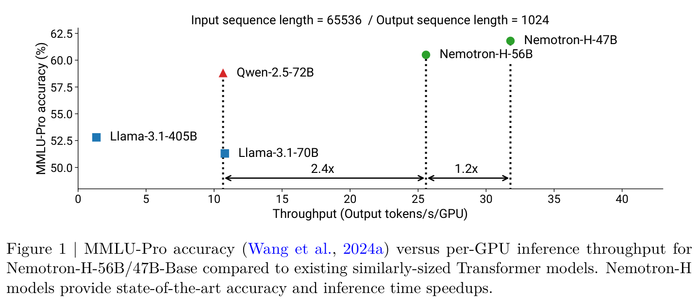
（接上页）Qwen-2.5-7B/Llama-3.1-8B 和 Qwen-2.5-72B/Llama-3.1-70B 分别更好或相当。例如，在我们评估的 17 个任务中，Nemotron-H-56B-Base 有 16 个优于 Llama-3.1-70B（第 2.5 节）。在较长序列下（输入序列长度 65536，输出 1024 token），我们在 NVIDIA H100 GPU 上测得最高 \(3\times\) 的推理吞吐量。
为达到上述结果，我们使用最多 20 万亿 token 的高质量整理数据和合成生成数据预训练 Nemotron-H 模型（Su et al., 2024；Akter et al., 2024）。Nemotron-H-56B-Base 是第一个完全使用基于 FP8 的方案预训练的 Nemotron 模型。我们的方案称为“逐张量当前缩放”，它是粗粒度的，使用单一缩放因子量化整个张量。该因子选择为保留给定张量中的最大值；任何过小、无法用所需 FP8 格式表示的值均置零。此外，我们发现将模型最前面和最后面的 4 个 GEMM 保留为 BF16，对于训练稳定性和收敛非常重要。在使用 8B 参数模型、总训练量最高 15 万亿 token 的较小消融实验中，我们表明，FP8 逐张量缩放的下游任务准确率可达到或超过 BF16。
为了高效地针对不同部署场景定制 Nemotron-H 模型，我们介绍一种名为 MiniPuzzle 的新剪枝与蒸馏压缩范式，它结合了 Minitron（Sreenivas et al., 2024）的简单性和 Puzzle（Bercovich et al., 2024）的多用途性。MiniPuzzle 能将较大模型变为满足特定显存、参数量或延迟约束的较小模型。我们使用 MiniPuzzle，仅以 630 亿训练 token 和 FP8 训练，将 Nemotron-H-56B-Base 蒸馏为 Nemotron-H-47B-Base。Nemotron-H-47B-Base 可以以 FP4 精度部署于单张具有 32GiB 显存的 NVIDIA RTX 5090 GPU（Nemotron-H-56B-Base 仅模型权重就需要约 29.5GiB，限制了最大上下文大小）。
Nemotron-H 基础模型也可以有效进行后训练，产生在视觉语言、指令遵循和长上下文（例如 RULER）基准上准确率较高的模型。基于 Nemotron-H-8B 和 Nemotron-H-56B 的 VLM，已用于 Cosmos-Reason1 项目（NVIDIA et al., 2025），为物理 AI 开发出非常强大的推理模型。
总体而言，Nemotron-H 模型家族表明，混合模型能在能力方面达到先进水平，同时提高推理速度。此外，我们认为 FP8 预训练和 MiniPuzzle 等压缩技术，能够降低创建此类模型的成本并提高效率。
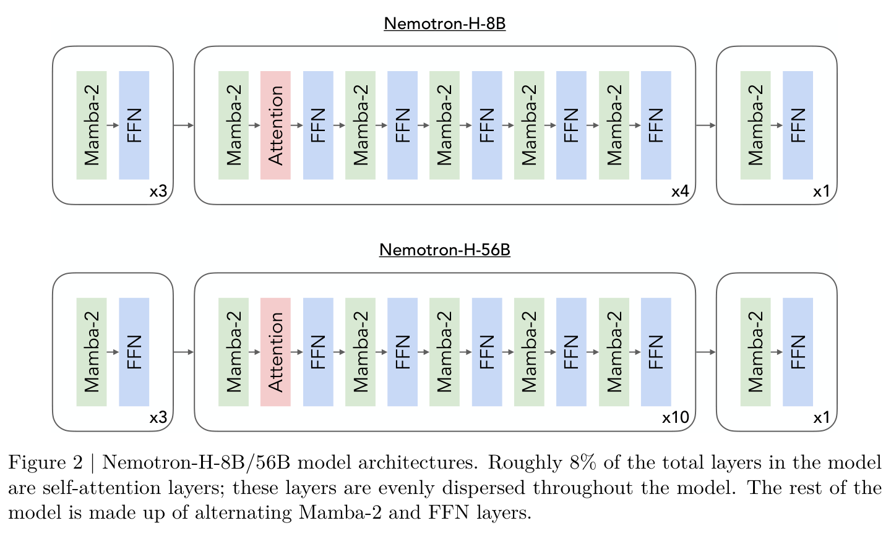
为支持进一步研究，我们在 Hugging Face 和 NGC 模型仓库中，以 Hugging Face 和 NeMo 格式发布了以下基础模型 checkpoint：
本技术报告其余部分的组织如下：
本节讨论 Nemotron-H-8B-Base 和 Nemotron-H-56B-Base 模型架构，以及用于产生这些模型的预训练过程的关键细节。我们还将 Nemotron-H-8B/56B-Base 与现有开源先进 Transformer 模型，在准确率（基础模型常用基准任务）和推理速度方面进行比较。
Nemotron-H 模型由 Mamba-2（Dao & Gu, 2024）、自 attention 和 FFN 层混合组成，概览见图 2 和表 1。按照此前工作（Waleffe et al., 2024）的建议，（接下页）
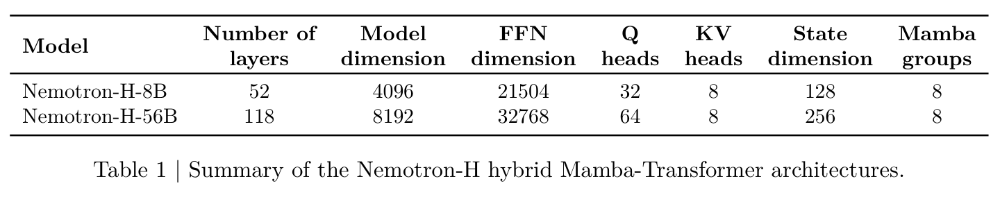
（接上页）我们将 attention 层数设为总层数的约 8%，并均匀分布在模型中。这对应 Nemotron-H-8B 的 4 个自 attention 层（共 52 层），以及 Nemotron-H-56B 的 10 个自 attention 层（共 118 层）。其余层平均分为 FFN 和 Mamba-2 层。我们还确保：a）模型第一层为 Mamba-2 层；b）模型最后一层为 FFN 层；c）自 attention 层始终位于 FFN 层之前（与 Vaswani et al.（2023）中的标准 Transformer 块相同）。
我们为 Nemotron-H-8B 使用 4096 的隐藏维度，为 Nemotron-H-56B 使用 8192。较小模型采用 21504 的 FFN 隐藏维度、32 个 attention 查询头和 128 的 Mamba-2 状态维度；较大模型采用 32768 的 FFN 隐藏维度、64 个 attention 查询头和 256 的 Mamba-2 状态维度。两个模型都使用包含 8 个键值头的 Grouped-Query Attention（Ainslie et al., 2023）、8 个 Mamba-2 分组，以及 FFN 层的平方 ReLU（So et al., 2022）激活。我们不使用任何位置 embedding。对于 Mamba-2 层，我们保留头维度（64）、扩展因子（2）和卷积窗口大小（4）的默认值。我们还使用 RMSNorm（Zhang & Sennrich, 2019）归一化，采用独立的 embedding 与输出层权重，且不使用 dropout。线性层不使用偏置权重。架构中每个 Mamba-2、自 attention 和 FFN 层外围都包含残差跳跃连接。
Nemotron-T-8B Transformer 基线。为了在相同条件下将 Nemotron-H-8B-Base 与 Transformer 模型比较，我们还使用完全相同的数据训练了 Nemotron-T-8B-Base。Nemotron-T-8B 架构沿用 GPT-3（Brown et al., 2020）的风格。我们使用 32 个 Transformer 层（每层包含自 attention 层及其后的 FFN 层）。与 Nemotron-H-8B 一样，我们使用 4096 的隐藏维度、32 个查询头、8 个键值头的 GQA、21504 的 FFN 隐藏维度、平方 ReLU 激活、RMSNorm、无偏置的线性层、不使用 dropout，以及独立的模型 embedding 和输出层权重参数。我们使用 RoPE 位置 embedding（Su et al., 2023）。
Nemotron-H-8B-Base 和 Nemotron-H-56B-Base 使用大规模高质量整理数据和合成生成数据语料库进行预训练。
我们为四个大类分别建立数据整理流水线：通用网页抓取数据、数学数据、代码数据和“学术”数据。下面依次讨论。
网页抓取数据。对于 Nemotron-H，相比 Nemotron-4（Parmar et al., 2024；NVIDIA, 2024），我们在英语 Common Crawl 数据处理中进行了几项关键创新；这些创新显著改善数据质量。关于数据集准备方式和各项消融的完整细节，请参阅专门的论文（Su et al., 2024）。这里给出简要概述。
我们主要侧重提取尽可能多的高质量 token，以便能够训练（接下页）
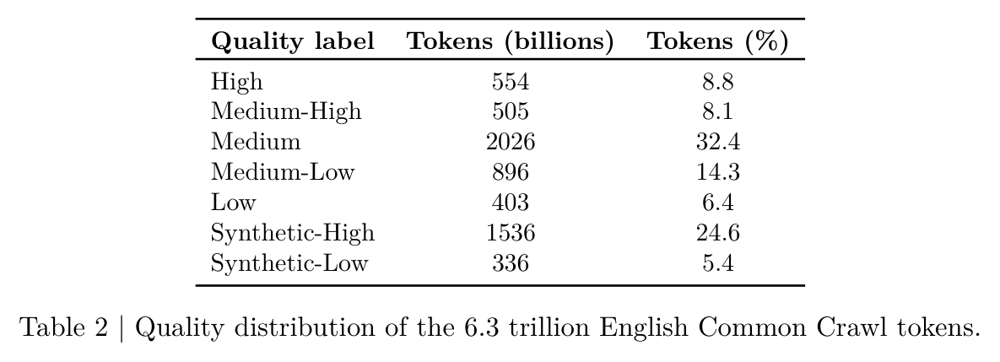
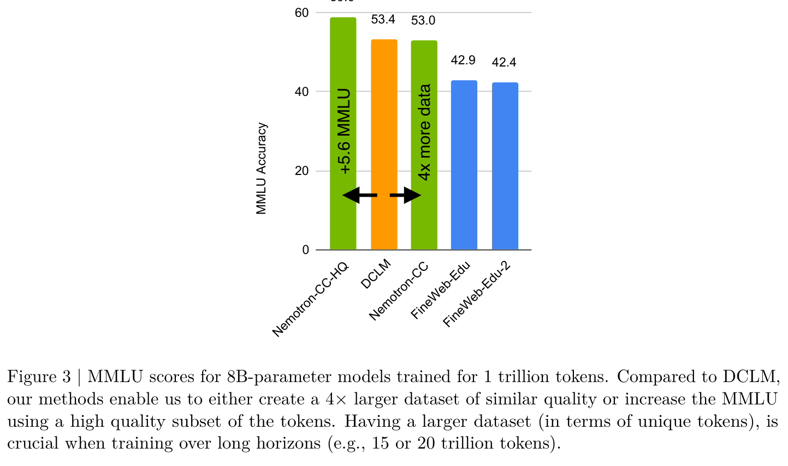
（接上页）Nemotron-H，采用很大的总训练 token 量（例如 15 万亿 token 或更多）。按照常见流程，我们先进行 HTML 到文本的提取、语言过滤、全局模糊去重和精确子串去重。不过在此阶段，我们偏离常规，使用三个基于模型的分类器组成的集成，将每个文档划入五个质量类别。通过集成，相比使用单个模型分类器的方法，我们获得更多且更具多样性的高质量 token。为了保留尽可能多的高质量 token，我们对低、中低和中等质量类别应用启发式与 PPL 过滤器。我们还改述低质量 token 以提升质量；第 2.2.2 节介绍合成数据生成流水线。
最终数据集包含 6.3 万亿 token，其中有 4.4 万亿经过全局去重的“真实”token，以及 1.9 万亿改述的合成数据 token。质量分布见表 2。如图 3 所示，相比 DCLM（Li et al., 2024）和 FineWeb-Edu（Penedo et al., 2024）等其他领先英语 Common Crawl 处理方案，我们的数据集产生质量更高的模型：使用高质量子集，相比 DCLM 将 MMLU 提高 5.6 分；而使用完整数据集、不对质量类别作任何加权，则在拥有 \(4\times\) 更多独有 token 的同时，达到与 DCLM 相当的准确率。更多独有 token 支持更大的总预训练量，而不必在整个数据集上进行超过 4 至 8 个 epoch 的训练。更多 epoch（接下页）
（接上页）会带来递减的回报（Muennighoff et al., 2024；Feng et al., 2024）。
为了让社区受益，我们依据 Common Crawl 使用条款公开发布了数据集（Nemotron-\(CC^{1}\)）。
数学数据。为确保 Common Crawl 中的技术页面保留数学内容，我们使用 Paster et al.（2023）的方案和代码库。我们还发现，有必要将这一方案应用于 Wikipedia 等其他高质量数据来源。与 FineMath（Allal et al., 2025）类似，我们发现更小但质量更高的数据集能在相关基准上带来更大提升。
代码数据。我们使用大量代码 token 预训练 Nemotron-H 模型。我们从此前 Nemotron-4 的工作（Parmar et al., 2024；NVIDIA, 2024）出发，选择减少 HTML、Markdown、YAML、CSS、JSON 和 Makefile 等标记与配置语言的 token 数。原本来自这些语言的 token 改为从 Python、C++、C 和 Java 等热门语言中获取。
学术数据。Nemotron-H 预训练数据集包含从“高信息量”英语文本收集的额外 token，包括采用宽松许可证的书籍和文章。我们使用覆盖各种领域的示例（例如科学、数学、人文、法律和工程），以及广泛的文档类型，包括同行评审期刊出版物、教科书、已出版小说和专利文档。
这些文档的原始格式差异很大，包括 EPuB、HTML、XML、纯文本、PDF、LaTeX 和 markdown，因此我们编写定制函数，从输入格式解析文本并转换为标准输出格式。对于表格、列表和方程等复杂片段，我们以 markdown 或 LaTeX 保持适当格式。我们使用 Éclair（Karmanov et al., 2025）进行 PDF 到文本的提取。我们还开发专门的启发式过滤器，去除页眉或页脚中的无关信息。随后应用 Nemotron-4 的启发式与 PPL 过滤器，从用于预训练的文档集中删除低质量文档。
为了在最终数据混合中更好地为这些来源的示例赋予权重，我们开发分类器，根据教育内容和难度给文档评分。我们还尝试确定每篇文档的领域（生物学、商业、化学、计算机科学、经济学、工程、历史、法律、数学、医学、哲学、物理学、心理学或其他之一）。对于教育内容，我们以 0（没有教育信息）到 3（高度相关的教育信息）的数值尺度给所有文档评分。对于教育难度，我们将教育内容丰富的文档划分为小学、初中、高中、本科和研究生等级。我们能够使用这些类别（例如“本科水平、教育内容丰富的生物学”）确定文档权重（第 2.2.3 节）。与预期一致，我们发现提高重要领域中高中/本科水平、教育内容丰富的数据的权重最有帮助。
我们还生成合成数据，以对低质量数据去噪，并增加提供给模型的 token 的多样性。我们使用不同处理流水线，合成改写网页抓取、数学和代码数据。
网页抓取数据。我们发现，使用 LLM 改述文本能有效减少低质量抓取数据中的噪声和错误，并产生包含新独有 token 的高质量数据的额外变体。这在下游任务上带来更好结果。
1 https://data.commoncrawl.org/contrib/Nemotron/Nemotron-CC/index.html
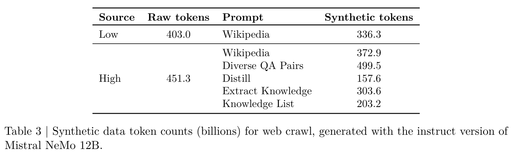
我们使用 Maini et al.（2024）的“medium Wikipedia”提示词改述低质量数据。对于高质量文档，我们使用四种额外提示词生成合成数据：
这些提示词要求模型给出清晰、简洁的回答，同时保留事实信息以及数字等具体细节。总体而言，我们使用 Mistral NeMo 12B 的指令版本生成了超过 1.8 万亿合成 token。按质量和提示词划分的源 token 与生成 token 数见表 3。关于此次合成数据生成的完整细节，包括所用提示词，已在 Su et al.（2024）中单独发表。
数学数据。我们使用合成数据增强 GSM8K 和 MATH（Cobbe et al., 2021；Hendrycks et al., 2021b）等数学推理基准的表现，细节见 Akter et al.（2024）。我们使用 Nemotron-4-340B（NVIDIA, 2024），将 OpenWebMath（Paster et al., 2023）从 140 亿 token 扩展到超过 1000 亿 token，在受控实验中将 GSM8K 提高了 18 分。
为此，我们从 Common Crawl 的技术预训练文档出发，利用 Nemotron-4-340B 生成对话，由知识丰富的人设引导经验较少的人设（例如学生与教师之间的互动）。这种方法与 Physics of Language Models 系列（Allen-Zhu & Li, 2024）的认识一致，并纳入同时呈现错误答案与纠正等策略。通过将内容组织为学习互动，我们的方法从公开语言模型蒸馏广泛知识，同时避免对基准过拟合。
代码数据。为了增加以问题求解为中心的多样代码数据，我们选择为 11 种编程语言（例如 Python、C++、C、C# 和 Java）合成自然语言与代码混合的数据集。为此，我们提示 Mixtral 8x22B 根据从整理代码数据集中采样的源代码片段，生成一个编程问题。样本包含 1 至 15 行代码（LOC），通常只是一个小函数。我们还提示 Mixtral 8x22B 解答生成的问题，并以最低限度的处理删除明显无效的解答。例如，我们提取模型生成的 Python 代码，尝试将其解析为抽象语法树（AST），丢弃无法解析的样本。最后，为形成一个训练样本，我们将生成的问题与答案合并为单一样本，混合自然语言指令、生成的代码（通常放在 markdown 代码块中），以及通常会给出的解题方法说明。
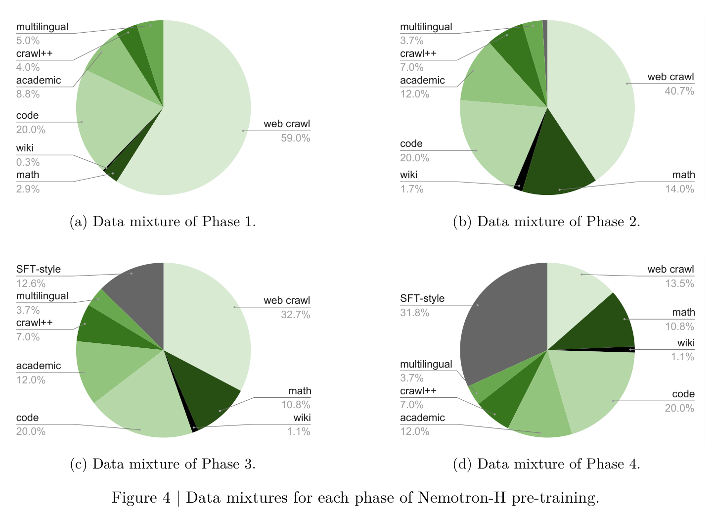
SFT 风格数据。我们进一步在预训练语料库中增加合成 SFT 风格数据；这改善了基础模型遵循指令的能力。我们使用 Qwen2.5 系列、Mixtral 8x22B、Nemotron-4-340B 和 DeepSeek-R1（仅用于 56B）模型生成这些数据集。我们按照 OpenMathInstruct-2（Toshniwal et al., 2024）提出的流水线，使用 AoPS2 等精心整理的种子数据改善数学能力。我们还采用 Genetic Instruct（Majumdar et al., 2024）提出的方法，以 tigerbot-leetcode3 和 the-stack-\(v2^{4}\) 为种子数据合成代码数据。为了赋予基础模型高质量通用知识，我们根据选定主题和领域特定文档生成问题—解答对。总体而言，我们在训练语料库中增加了 2300 亿合成 SFT 风格 token（1740 亿数学 token、350 亿代码 token，以及 210 亿通用知识 token）。
我们的数据混合包含七个高层数据类别：网页抓取、数学、Wikipedia、代码、学术、crawl++、多语言以及合成 SFT 风格数据。Crawl++ 包含 OpenWebText、BigScience 和 Reddit 等网页抓取衍生数据。我们的多语言数据有九种语言：德语、西班牙语、法语、意大利语、葡萄牙语、中文、日语、韩语和俄语。我们设计数据混合，使给定质量的所有数据来源获得相近权重，而更高质量的数据来源获得比低质量来源更高的权重。有关估计数据集质量的更多细节，见 Feng et al.（2024）。
2 https://artofproblemsolving.com
3 https://huggingface.co/datasets/TigerResearch/tigerbot-kaggle-leetcodesolutions-en-2k
4 https://huggingface.co/datasets/bigcode/the-stack-v2
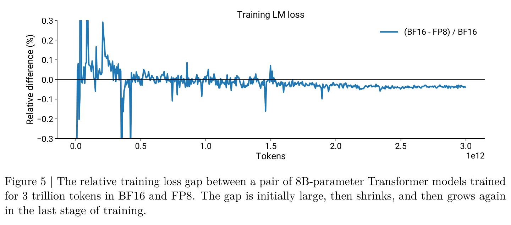
我们使用分阶段数据混合方法（Feng et al., 2024）预训练两个 Nemotron-H 基础模型。第一阶段使用促进数据多样性的数据混合；第二和第三阶段主要使用高质量数据集（例如 Wikipedia）。我们在训练完成 60% 时切换到第二阶段，完成 80% 时切换到第三阶段。第四阶段在最后 3800 亿训练 token 上进行。各阶段使用的数据混合见图 4。我们最初在训练 1 万亿 token 的 80 亿参数模型上的实验表明，分阶段预训练方法相比随机数据顺序提高 3.4%。
Nemotron-H-56B-Base 使用逐层混合精度预训练：模型中的所有线性层（包括 FFN 块中的两个线性层，以及 attention 块中的 QKV/输出投影）均以 FP8 精度计算，最前面 4 层和最后面 4 层除外，它们保留为 BF16。我们量化线性层的前向和反向传播。与 Micikevicius et al.（2022）一样，我们使用混合 FP8 方法，对权重和激活张量使用 E4M3，对 gradient 张量使用 E5M2。
我们使用 FP8 逐张量动态量化，它包含多个步骤：首先计算量化缩放因子（检查除零情况）；然后将输入张量乘以量化缩放因子，并转换为所需 FP8 格式。量化缩放因子为该 FP8 数据格式的最大可表示值除以输入张量的最大绝对值。
我们观察到，FP8 预训练实验的对数似然损失曲线几乎总是高于对应的 BF16 实验，但差距出奇地小，训练和验证中的典型相对差距均不足 0.1%。随着训练推进，这种损失差距通常缩小，但在最后四分之一训练期间又扩大。我们推测，这是因为在训练后期占主导的极小 gradient 更新，即使采用 E5M2，也会被置零。图 5 展示预训练期间 BF16 与 FP8 实验之间的典型相对损失差距。
尽管损失曲线略差，我们观察到 FP8 训练模型的下游评估与 BF16 实验一样好或更好。传统上作为下游任务代理指标的对数似然，在我们的实验中并不是可靠的预测指标；事实上，我们经常观察到损失曲线更好的模型，在下游评估任务上反而表现更差。
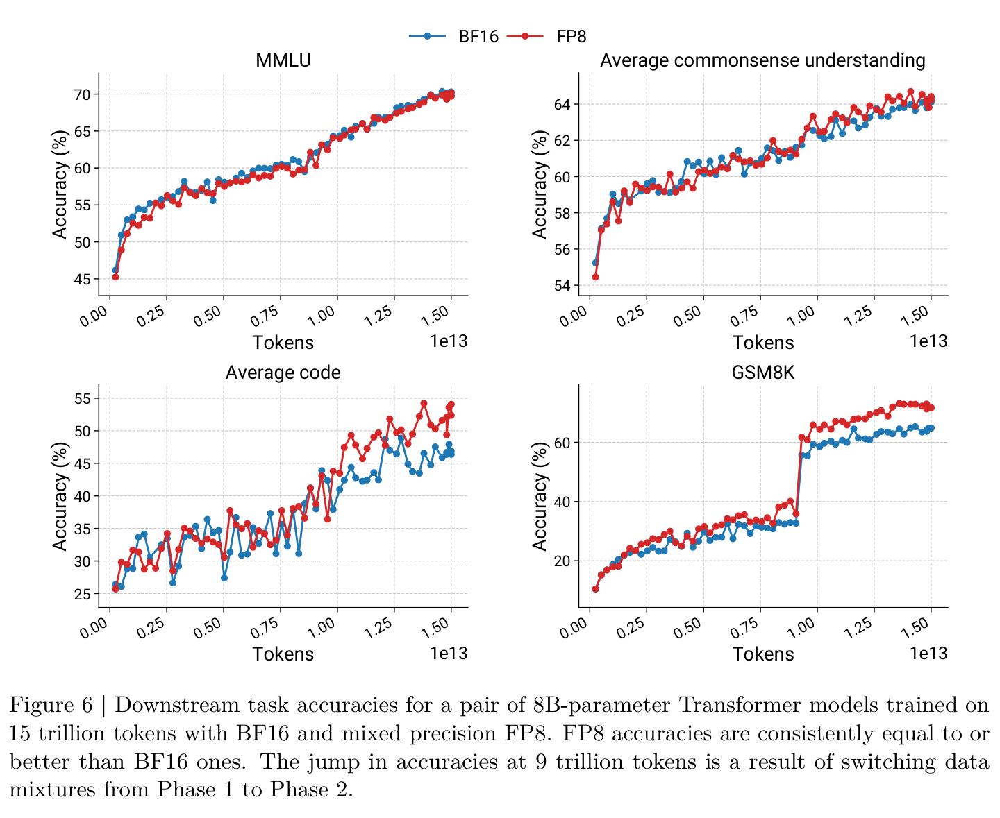
对于代码和数学任务，使用逐张量当前缩放的实验，其结果通常显著优于 BF16 实验。图 6 展示两个训练了 15 万亿 token 的 8B 参数 Transformer 之间的准确率差距，一个使用 FP8，另一个使用 BF16。由于在相同总 token 量下，下游结果相同或更好，我们从不需要相对于 BF16 模型额外训练 FP8 模型。对于使用 FP8 训练的模型，我们分别以 BF16 和 FP8 精度评估；结果通常相同，BF16 评估一般略好。不过，对于 56B 模型，FP8 评估最终超过 BF16 评估。
我们发现，在构建 FP8 方案时，至少使用 8B 参数进行验证非常重要，因为较小模型上的结果无法推广。所有实验的总训练量至少为 1 万亿 token。
我们以 15 万亿 token 的总训练量训练 Nemotron-H-8B-Base，以 20 万亿 token 训练 Nemotron-H-56B-Base。我们使用 8192 的序列长度和 768 的全局 batch 大小（每批 6291456 个 token）。我们不采用 batch 大小逐步增加。对于 Nemotron-H-8B-Base，我们使用 \(8\times 10^{-4}\) 的峰值学习率，并在 83 亿 token 上 warmup；对于 Nemotron-H-56B-Base，我们使用 \(4\times 10^{-4}\) 的峰值学习率，并在 250 亿 token 上 warmup。两种情况下都使用余弦学习率衰减，最小值为峰值的 1%，权重衰减为 0.1，（接下页）
（接上页）Adam 的 \(\beta _{1}\) 和 \(\beta _{2}\) 分别为 0.9 和 0.95。
我们使用 Megatron-\(LM^{5}\) 预训练 Nemotron-H，依赖 Transformer Engine6 提供 FP8 支持。我们使用 8 路 TP（Shoeybi et al., 2020），结合 SP（Korthikanti et al., 2022）进一步节省显存；还使用 768 路 DP，将优化器状态分布在 DP 副本上（Rajbhandari et al., 2020）。
我们还高度重视大规模模型训练时尽量减少停机：在大量 GPU 上进行长期训练作业时，作业失败和速度下降不可避免，会损失训练生产力。失败可能源于 GPU 相关错误（例如无法纠正的 ECC 错误或 GPU 从总线掉线）、网络互连或 Lustre 等共享基础设施的错误，或者应用引发的故障（例如某些操作中的数值不稳定或“坏”数据）。我们也可能因各种原因遇到作业减速（例如单 GPU 降频或集合通信变慢）。
为尽量降低上述问题的影响，我们侧重于：\(a\)）准确将失败归因于正确的基础设施和应用组件，以防止重复中断；\(b\)）降低每次失败的恢复开销。为此，我们使用 DGX Cloud Resilience 服务7，确保准确归因，并在下一次训练作业实例中排除相应硬件组件（例如带有故障 GPU 的特定 HGX 节点），防止重复失败。启用 DGX Cloud Resilience 后，我们集群的平均故障间隔时间（MTBF）提高了 \(3.3\times\)。
我们还主动频繁保存 checkpoint，以尽量减少失败时丢失的工作量（从最近一次保存 checkpoint 到失败之间的权重更新会丢失）。我们使用 NVRx8，通过异步保存 checkpoint 而不阻塞训练，以低开销实现 checkpoint 保存。我们还优化了作业重启时间（即 Megatron-LM 在训练迭代开始前所需的一组操作，例如分布式运行时初始化和 checkpoint 加载）。
这些组件共同支持我们在 6144 张 NVIDIA H100 GPU 上高效训练 Nemotron-H-56B-Base。
除非另有说明，所有模型评估均由我们自行运行。为了公平比较，我们基于 lm-evaluation-harness9 构建评估设置，进行以下调整：
5 https://github.com/nvidia/megatron-lm
6 https://github.com/nvidia/transformerEngine
7 https://developer.nvidia.com/blog/ensuring-reliable-model-training-on-nvidia-dgx-cloud/
8 https://github.com/NVIDIA/nvidia-resiliency-ext
9 https://github.com/EleutherAI/lm-evaluation-harness
10 https://github.com/huggingface/math-verify
11 https://github.com/NVIDIA/NeMo-Skills/blob/main/nemo_skills/code_execution/math_grader.py
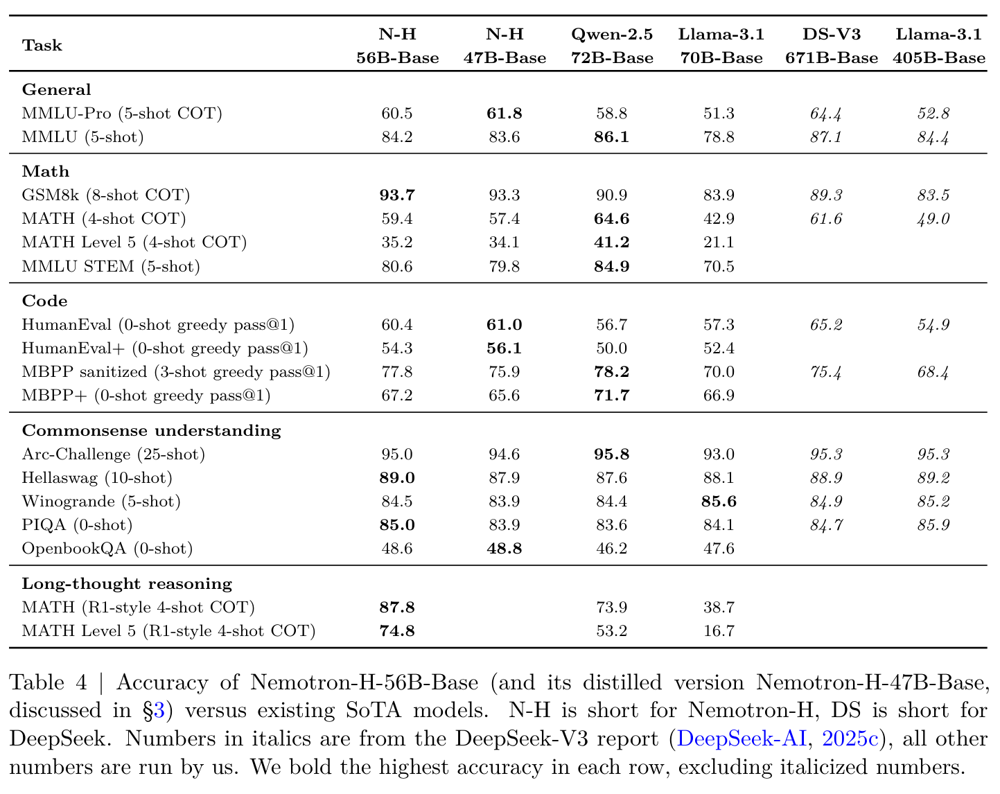
（接上页列表第 2 项）这些示例由 DeepSeek-R1（DeepSeek-AI, 2025b）生成。仅改变提示词，Nemotron-H 和 Qwen 2.5 模型在该基准上都出现显著提升。
Nemotron-H-56B-Base 和 Nemotron-H-8B-Base 在常见基准任务上的准确率结果见表 4 和表 5。Nemotron-H-56B-Base 和 Nemotron-H-47B-Base 均以 FP8 评估，其他所有模型以 BF16 评估。在两种模型规模下，Nemotron-H 基础模型相比规模相近的先进 Transformer 模型，均取得相当或更好的准确率。
我们直接将 Nemotron-H-56B-Base 与 Qwen-2.5-72B-Base（Qwen, 2025）和 Llama-3.1-70B-Base（Meta, 2024）比较。在评估的 17 个任务中，Nemotron-H-56B-Base 在 9 个任务上达到三者中的最高准确率，Qwen-2.5-72B-Base 在 7 个任务上达到最高准确率，而 Llama-3.1-70B-Base 在 1 个任务上达到最高准确率；除了这唯一的任务（Winogrande），Nemotron-H-56B-Base 在所有任务上都超过 Llama-3.1-70B-Base。我们进一步将 Nemotron-H-56B-Base 与两个规模大得多的先进模型比较：DeepSeek-V3-671B-Base（DeepSeek-AI, 2025c）（接下页）
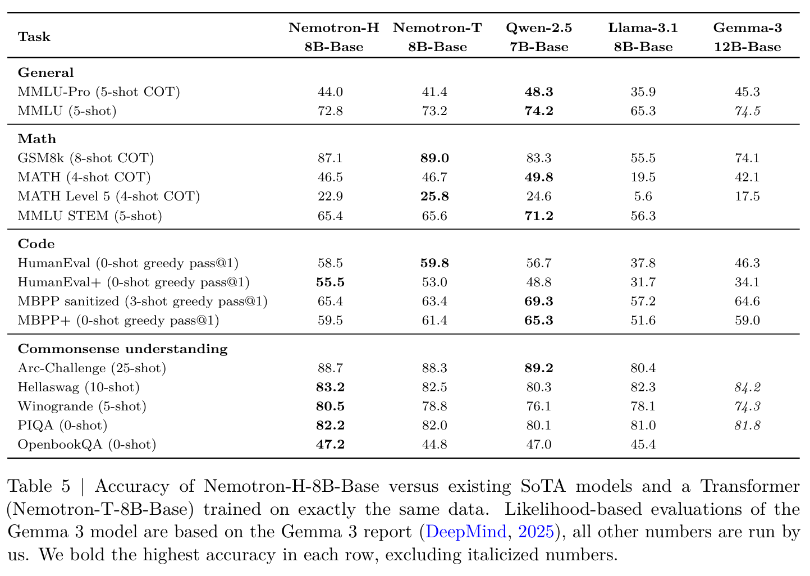
（接上页）以及 Llama-3.1-405B-Base（Meta, 2024）；对于这两个模型，我们在有公开报告数值的共同任务子集上使用其公开数值。令人惊讶的是，Nemotron-H-56B-Base 仍能与这些模型竞争，在 10 个重叠任务中，分别有 4 个和 5 个任务超过 DeepSeek-V3-671B-Base 和 Llama-3.1-405B-Base。
将 Nemotron-H-8B-Base 与 Qwen-2.5-7B-Base 和 Llama-3.1-8B-Base 比较时，我们观察到类似的准确率结果（表 5）。在用于评估的 15 个任务中，Nemotron-H-8B-Base、Qwen-2.5-7B-Base 和 Llama-3.1-8B-Base 分别在 7、8 和 0 个任务上达到三者中的最高准确率。Nemotron-H-8B-Base 在常识理解任务上尤其强，在此类别的 5 个任务中，有 4 个取得最高准确率。与上面一样，我们也纳入与更大模型 Gemma-3-12B-Base（DeepMind, 2025）的比较；Nemotron-H-8B-Base 能与该更大模型竞争。
表 5 还包含迄今为止规模最大的、在相同条件下对 Mamba-Transformer 混合模型与纯 Transformer 模型的比较（Nemotron-H-8B-Base 与 Nemotron-T-8B-Base）。相较使用完全相同数据训练的 Transformer，Nemotron-H-8B-Base 在 15 个任务中的 7 个上准确率更高，另有 4 个任务的差距在 1 分以内。总体而言，该实验表明，当以先进规模训练时，混合模型能够达到与 Transformer 模型相当或更好的准确率。
由于减少自 attention 层，Nemotron-H-8B/56B-Base 相比上面表 4 和表 5 中的其他 Transformer 模型，提供推理速度提升。为量化这些提升，我们绘制 Nemotron-H-56B-Base（接下页）
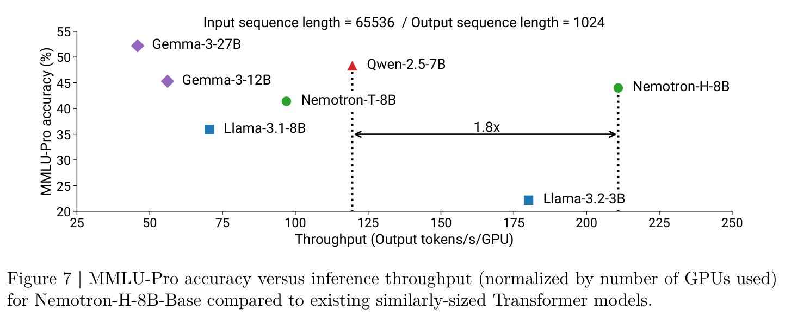
（接上页）及规模相近的 Transformer 模型的 MMLU-Pro 准确率与推理吞吐量，见图 1；Nemotron-H-8B-Base 及相关基线见图 7。我们使用 65536 的输入序列长度，并要求模型生成 1024 个输出 token。对于 Nemotron-H 推理，我们使用初步的 Megatron-LM 实现；基线使用 vLLM \(v0.7.3^{12}\)。这些实验中，我们尽可能使用较大的 batch 大小，以最大化每 GPU 的推理吞吐量，所有实验均在 NVIDIA H100 GPU 上运行。我们报告按 GPU 数量归一化的结果（即每 GPU 每秒的输出 token 数）。
在上述设置下，相比 Qwen-2.5-72B 和 Llama-3.1-70B，Nemotron-H-56B-Base 每 GPU 每秒能生成 \(2.4\times\) 更多输出 token（蒸馏为 Nemotron-H-47B-Base 后为 \(2.9\times\)，见第 3 节）。相比 Llama-3.1-405B，Nemotron-H-56B-Base 的吞吐量高 \(19.6\times\)。与较大模型类似，Nemotron-H-8B-Base 的推理也比对应 Transformer 模型更快。如图 7 所示，在较长上下文中，我们测得相比 Qwen-2.5-7B 和 Llama-3.1-8B 分别加速 \(1.8\times\) 和 \(3\times\)。推理加速来自两个因素：a）Mamba-2 层执行恒定计算，而自 attention 层执行线性计算；b）Mamba-2 层的较低显存占用支持更大的 batch 大小，从而提高效率。我们预计，进一步优化 Nemotron-H 推理会相对于过去几年已深度优化的 Transformer 带来额外加速。
高效部署 LLM 往往需要针对硬件施加的特定约束定制模型架构。本节介绍用于将 56B 模型压缩为 47B 参数的剪枝和蒸馏过程，目标是在 NVIDIA GeForce RTX 5090 GPU 上运行更长上下文推理（在具有 32GiB 显存的 RTX 5090 GPU 上，以 FP4 精度存储 56B 参数模型的权重需要 29.5GiB，仅剩 2.5GiB 用于 KV cache 和激活缓冲区）。我们介绍一种名为 MiniPuzzle 的新模型压缩框架，它结合 Minitron（Sreenivas et al., 2024；Muralidharan et al., 2024）的简单性与 Puzzle（Bercovich et al., 2024）的多用途性。相比从头训练，我们的方法用约少 \(300\times\) 的 token 获得 47B 模型。压缩后的 47B 模型实现 \(1.2\times\) 推理加速（图 1），同时达到与原始 56B 模型相当的准确率。
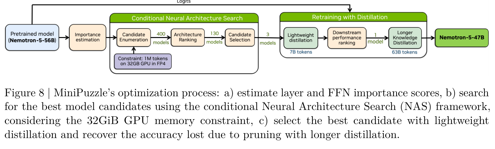
MiniPuzzle 将轻量剪枝与神经架构搜索（NAS）结合，产生满足特定目标部署约束的高效压缩模型。图 8 提供框架的高层概览。MiniPuzzle 的优化过程包含三个阶段：a）重要性估计（第 3.2 节）；b）条件 NAS（第 3.3 节）；c）知识蒸馏（第 3.4 节）。
MiniPuzzle 首先为模型的每个组件（例如层、FFN 神经元）收集重要性或敏感度得分，以帮助决定删除哪些组件；这就是重要性估计阶段。这一阶段计算的得分用于决定可以剪除哪些组件。我们指出，在现代 LLM 规模下，基于 gradient 信息的敏感度分析通常不切实际（Muralidharan et al., 2024）；因此，我们依赖一种只使用前向传播的轻量策略。本工作使用一种在消融研究中表现良好的简化方法：a）剪除层；b）剪除 FFN 隐藏维度（实际上是神经元）。我们还尝试剪除 Mamba 头和 Mamba 头维度；遗憾的是，两个维度都导致准确率严重下降（尤其是头维度剪枝）。
下面介绍如何计算每个层和 FFN 神经元的重要性。
层重要性。我们使用 Puzzle 的评分方法估计模型各层的重要性。给定输入张量，层重要性计算为完整模型中 LM head 紧前方的中间激活张量，与删除该特定层的模型中对应激活张量之间的均方误差（MSE）。我们在一个小型随机训练数据子集上（本例为 128 个样本）平均这些排名，以得到考虑样本差异的重要性可靠估计。
图 9 绘制 Nemotron-H-56B-Base 各层的平均重要性得分。绿色、蓝色和红色虚线分别对应自 attention、FFN 和 Mamba 层。从图中可见，56B 模型遵循 Minitron 中观察到的典型模式：最重要的层集中在模型开始和末尾。此外，MSE 重要性表明，虽然 56B 模型只有 10 个自 attention 层，但部分自 attention 层仍属于最不重要的层，尤其是第 84 层（第 7 个自 attention 层）。不过，第 40、51、62 和 73 层似乎比邻近的其他层更重要。
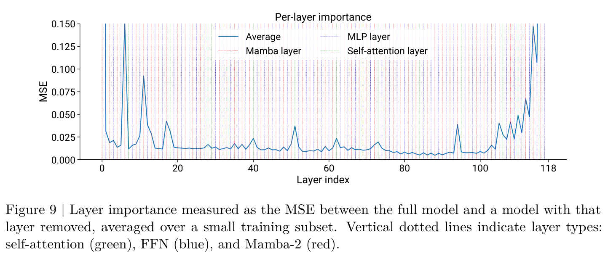
FFN 重要性。FFN 层内部由两个线性算子组成，中间是一个非线性激活：
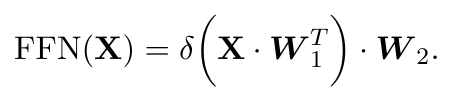
这里，\(X\) 表示输入，\(W_{1}\) 和 \(W_{2}\) 是 FFN 层中对应的两个权重矩阵。\(W_{1}\)、\(W_{2} \in \mathbb{R} ^{d_{ffn}\times d_{model}}\)，其中 \(d_{model}\) 和 \(d_{ffn}\) 分别是模型隐藏维度和 FFN 隐藏维度（表 1）。\(\delta (\cdot )\) 表示非线性激活函数（本工作中为平方 ReLU）。
沿用 Minitron 的流程，我们通过检查每个 FFN 层第一个线性算子中各神经元产生的输出集合，计算每个神经元的重要性。为此，我们使用一个包含 1024 个样本的小型校准数据集。形式上，我们通过聚合神经元在给定输入 batch \(X\) 时的输出，计算其重要性得分：
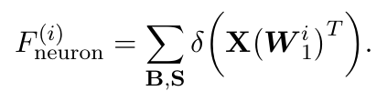
这里，\(W_{1}^{i}\) 表示权重矩阵 \(W_{1}\) 的第 \(i\) 行。\(\sum _{B,S}\) 表示沿 batch 和序列维度聚合。根据 Minitron 论文（Muralidharan et al., 2024）中的观察，我们沿 batch 和序列维度使用均值和 l2 范数聚合函数。对于得分序列 \(S\)，均值聚合定义为 \((1/n)\sum ^{n}_{i=1}|S_{i}|\)，l2 范数为 \(\sqrt{\sum ^{n}_{i=1}S_{i}^{2}}\)。
MiniPuzzle 的条件 NAS 利用每个层和 FFN 神经元的重要性得分（按第 3.2 节所述计算），识别满足显存约束并保留最关键组件的架构。这一过程支持高效探索可能层配置的巨大搜索空间，包含三个步骤：
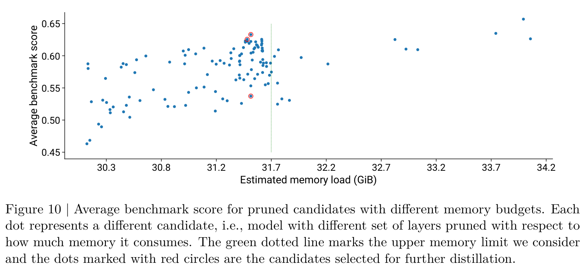
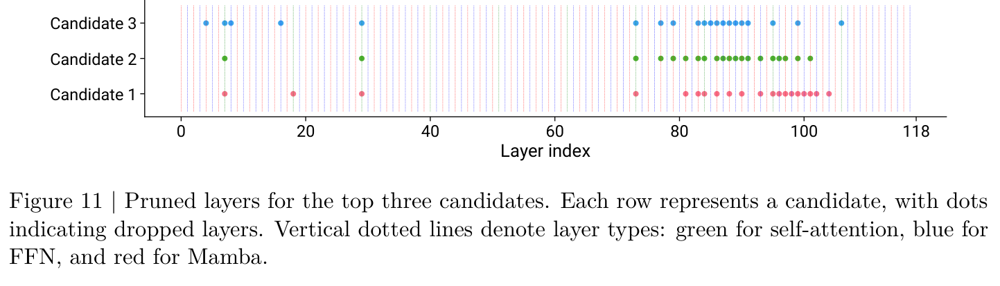
（接上页列表第 1 项）不重要的层，并将所有 FFN 层剪枝到相同目标宽度。只保留满足目标显存约束、低于 31.7 GiB 的架构（按在 100 万 token 大小上下文上进行 FP4 推理所需总显存计算），最终得到约 400 个候选架构。
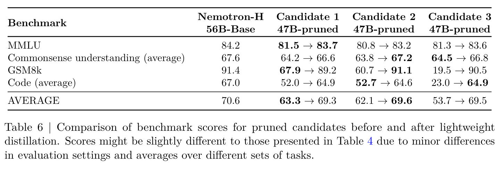
为恢复剪枝损失的准确率，模型继续接受训练。近期工作已表明，从原始模型向剪枝模型蒸馏知识优于传统微调（如 Minitron 和 Puzzle 所示）；因此，我们使用基于 logits 的蒸馏继续训练，在准确率恢复阶段只使用前向 KL 散度损失（关于蒸馏损失形式的更多细节，见 Minitron 论文第 3 节）。
在第 3.3 节介绍的初始候选选择过程之后，我们以 56B 模型为教师，使用约 7B token 对前 3 个候选进行短期蒸馏。实验表明，这一步对挑选最佳最终候选至关重要。表 6 详细列出三个候选在短期蒸馏前后的基准得分。我们从三个候选中选择准确率最高的一个（跨所有基准平均），使用 630 亿 token 进行延长的蒸馏训练，得到最终 47B 模型；本例中候选 2 表现最好，如表 6 所示。我们观察到，最终候选的选择随最终目标而变化，例如优先考虑代码任务或常识推理任务的准确率。
所有蒸馏训练都使用 FP8 精度、1.0 的 softmax 温度（控制知识蒸馏中概率分布的软化程度（Hinton et al., 2015））、8192 的序列长度，以及 768 个样本的 batch 大小。
使用 MiniPuzzle 方法，我们通过剪除完整层（深度）和 FFN 隐藏维度大小，将 56B 模型有效压缩为 47B 参数，提高推理速度，并支持在具有 32GiB 显存的 NVIDIA GeForce RTX 5090 GPU 上进行更长上下文推理。47B 模型保留 56B 模型一半的自 attention 层（5 个而非 10 个），以及 44 个 Mamba-2 层（原为 54 个）和 49 个 FFN 层（原为 54 个）。此外，FFN 中间大小从 32768 剪至 30720。如图 1 和表 4 所示，得到的 47B 模型在长上下文上推理快 \(1.2\times\)，基准准确率近乎无损，同时相比从头训练所需 token 约少 \(300\times\)。
本节介绍 Nemotron-H-8B-VLM 和 Nemotron-H-56B-VLM，它们基于 Nemotron-H-8B-Instruct 和 Nemotron-H-56B-Base。一般建议在已对齐模型上构建 VLM，以增强指令遵循能力（Dai et al., 2024）。本工作选择在 Nemotron-（模型名接下页）
（接上页模型名）H-8B-Instruct 和 Nemotron-H-56B-Base 上构建 Nemotron-H-8B-VLM 和 Nemotron-H-56B-VLM（因为 Nemotron-H-56B-Instruct 尚不可用）。Nemotron-H-8B-VLM 和 Nemotron-H-56B-VLM 均被用作构建 Cosmos-Reason1（NVIDIA et al., 2025）的基础模型，后者是用于物理 AI 的前沿推理模型家族。
在此前研究中，VLM 通过将纯文本 LLM 与视觉编码器集成而构建。这种集成的两种常见架构是仅解码器架构（Liu et al., 2023a）和基于交叉 attention 的架构（Alayrac et al., 2022）。我们使用仅解码器 NVLM-D 架构（Dai et al., 2024），因为它简单、参数高效、能处理高分辨率图像输入，并通过将非文本 token（例如图像、音频、视频）映射到与文本 token 相同的 embedding 空间，统一处理多种模态。Nemotron-H-VLM 包含视觉编码器、投影器（两层 FFN）和 Nemotron-H LLM 骨干。
视觉编码器。对于 8B 和 56B VLM，我们均使用 InternViT-300M-V2.5（Chen et al., 2024）作为视觉编码器。它接收 \(448\times 448\) 像素的静态图像，patch 大小为 \(14\times 14\)，共生成 1024 个视觉 token。每个视觉 token 表示为 1024 维向量。沿用 NVLM 设计（Dai et al., 2024），我们根据输入图像分辨率，动态将其调整为最接近的预定义宽高比 {a:b}（\(a\) 和 \(b\) 为整数），并划分为 \(a\times b\le 12\) 个图块13，每个对应一个 \(448\times 448\) 像素图块。为保留全局上下文，我们还生成一个 \(448\times 448\) 缩略图块，即完整图像的缩小版本。例如，给定 \(1920\times 1080\) 图像，最接近的预定义宽高比为 3:2。图像调整为 \(1344\times 896\)，并分为 \(3\times 2+1=7\) 个图块，包括一个缩略图块。
为减少 LLM 处理开销，我们将四个相邻图像 token 分组，并沿通道维度拼接，将 1024 个 token 下采样为 256 个。多个图块的图像 token 拼接时，交错插入原始文本格式的图块 ID 标签，为下游 LLM 提供动态分块结构信息；我们发现，这对提高各种视觉语言基准上的准确率至关重要。更多细节见 NVLM 技术报告（Dai et al., 2024）。拼接后的视觉 token 由两层 FFN 块处理，将每个视觉 token 映射到文本 token embedding 空间。这些 embedding 随后输入 LLM 骨干。
沿用 NVLM（Dai et al., 2024），Nemotron-H-VLM 分两阶段训练：
对于 VL 预训练，我们使用 NVLM（Dai et al., 2024）的大规模多样图文预训练数据集，包括图像描述（Lin et al., 2015；Sharma et al., 2018；Ordonez et al., 2011；Li et al., 2022）、自然图像视觉问答（VQA）（Goyal et al., 2017；Krishna et al., 2017）、视觉图表（Kafle et al., 2018）与文档理解（Marafioti & Laurencon, 2024）、（接下页）
13 预定义宽高比为 \(\{a:b\} = \{1:1, 1:2, 1:3, 1:4, 1:5, 1:6, 1:7, 1:8, 1:9, 1:10, 1:11, 1:2, 2:1, 2:2, 2:3, 2:4, 2:5, 2:6, 3:1, 3:2, 3:3, 3:4, 4:1, 4:2, 4:3, 5:1, 5:2, 6:1, 6:2, 7:1, 8:1, 9:1, 10:1, 11:1, 12:1\}\)。
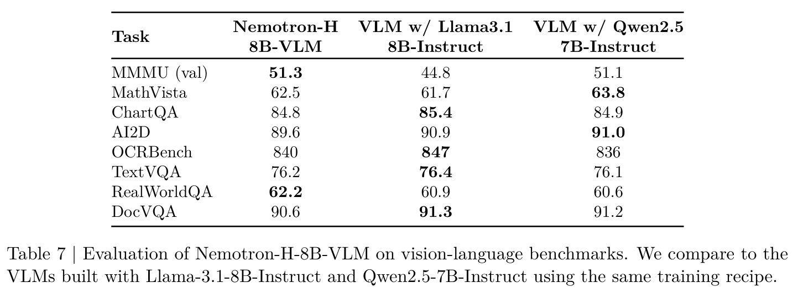
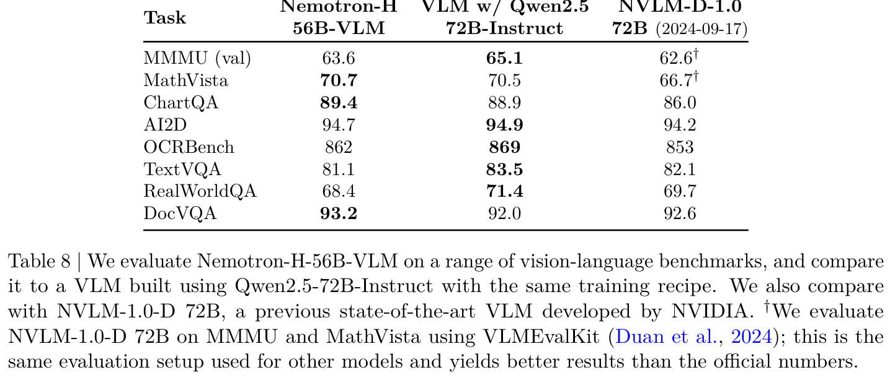
（接上页）光学字符识别（OCR）（Mishra et al., 2019）与场景文字识别（Veit et al., 2016），以及视觉数学推理（Lindström & Abraham, 2022）数据。总体而言，我们的 VL 预训练数据集包含 1.3 亿个样本。我们进行仔细清理，以删除任何潜在有害内容。
对于 VL SFT，我们使用 NVLM（Dai et al., 2024）和 Eagle2（Li et al., 2025）的多样化高质量数据集。除了前面提到的类别，数据集还包含基于知识的 VQA（Marino et al., 2019）、视觉推理（Hudson & Manning, 2019）、科学相关 VQA（Lu et al., 2022）和视觉指令遵循数据。总体而言，我们的 VL SFT 数据集包含 600 万图文样本。更多细节见 Dai et al.（2024）和 Li et al.（2025）。
我们在一组全面的视觉语言基准上评估 Nemotron-H-8B-VLM 和 Nemotron-H-56B-VLM，包括 MMMU（Yue et al., 2024）、MathVista（Lu et al., 2024）、ChartQA（Masry et al., 2022）、AI2D（Kembhavi et al., 2016）、OCRBench（Liu et al., 2024）、TextVQA（Singh et al., 2019）、RealWorldQA（xAI, 2024）和 DocVQA（Mathew et al., 2021）。这些基准评估广泛能力，包括多模态推理、视觉上下文中的数学推理、自然图像理解、场景文字识别、图表与文档理解、真实世界感知和 OCR。
我们使用相同训练方法和数据集，将 Nemotron-H-8B-VLM 与基于 LLaMA-3.1-8B-Instruct 和 Qwen2.5-7B-Instruct 构建的 VLM 比较。如表 7 所示，Nemotron-H-8B 证明它是开发同类最佳 VLM 的强大 LLM 骨干。表 8 进一步将 Nemotron-H-56B-VLM 与 NVLM-1.0-D（Dai et al., 2024），以及采用相同训练方案、基于 Qwen2.5-72B-Instruct 构建的 VLM 比较。Nemotron-H-56B-VLM 取得先进结果，展现出相较此前模型更优的质量。
我们首先研究 Mamba-Transformer 混合模型能在多大程度上有效后训练为指令微调和长上下文版本。我们对使用相同数据预训练的 Transformer（Nemotron-T-8B-Exp-Base）和混合模型（Nemotron-H-8B-Exp-Base）进行实验，得到两个预训练表现非常相近的模型，如表 9 所示。
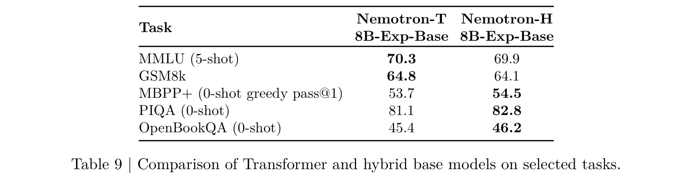
随后，我们通过多阶段训练流程，将两个基础模型后训练为指令微调版本 Nemotron-T-8B-Exp-Instruct 和 Nemotron-H-8B-Exp-Instruct。第一阶段，我们使用 600 万个样本的混合数据进行 SFT，包含代码、数学和通用指令遵循任务。为提高长上下文表现，我们通过拼接较短样本，纳入最长 512k token 的扩展对话训练。我们进一步通过插入对较早轮次的引用，以及在对话中引入语义相关的片段来增强上下文。这使 RULER（Hsieh et al., 2024）得分即使在较短上下文长度（例如 128k）下也得到改善。
第二阶段，我们转为偏好调优，在通用领域提示词上使用离线 RPO（Sun et al., 2025）。随后，我们按照 IFEval（Zhou et al., 2023）风格提示词，额外进行一轮侧重具体指令遵循的 RPO。使用第一阶段对话，将样本随机扩展至 32k token，以保留长上下文能力。
第三阶段，我们应用 on-policy RPO，用第二阶段 checkpoint 生成偏好和非偏好补全。我们纳入 AEGIS2.0（Ghosh et al., 2025）的安全数据，并提高奖励缩放，这改善了下游基准表现。
我们尝试了多轮迭代离线 RPO 和 DPO。两者产生类似结果；我们报告任一方法中的最佳模型结果。最佳 Transformer 模型使用三轮 RPO；最佳混合模型使用两轮 DPO。
表 10 展示结果。这些发现支持 Mamba-Transformer 混合模型可以经过后训练，达到或超过 Transformer 的表现。
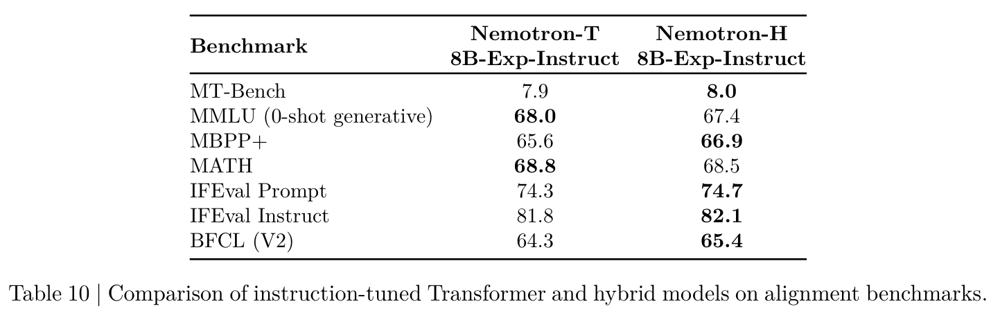
在先导研究中，我们发现 mamba2 混合模型与纯 Transformer 模型具有相似的后训练特性，随后继续训练 Nemotron-H 8B Reasoning 和 Nemotron-H 47B Reasoning 模型。
训练流水线从 SFT 开始，使用包含显式推理轨迹的整理示例，轨迹用 <think>...</think> 标签包围，引导模型在给出最终答案之前逐步解决问题。这些轨迹通常表示多条可能的解题路径，鼓励模型探索替代方案并迭代，以提高准确率。不过，额外的冗长内容也增加推理成本，尤其是较长轨迹。为平衡这一点，我们引入去掉推理的配对示例，让模型学习何时以及如何直接回答。这种双格式训练帮助模型灵活适应不同推理需求。
第一阶段：掌握数学、代码和科学推理。微调的第一阶段侧重数学、科学和代码，即显式推理特别有价值的领域。这部分训练数据的推理与非推理样本比例为 5:1，其中一些示例已在 Llama-Nemotron-Post-Training-Dataset 中公开提供。
第二阶段：扩展指令覆盖、对话与安全。第二阶段转向指令遵循、安全对齐和多轮对话，同时继续采样第一阶段的数据，以保留较强 STEM 表现。该数据集更紧凑，约小 \(10\times\)，并提供推理和非推理样本的均衡混合。这帮助模型泛化到更广泛的任务，同时改善对推理模式切换的控制。
为了提高长上下文能力，我们在第二阶段数据混合的扩增版本上进行额外训练，其中每个样本最长 512k token。这一扩展混合中的样本，通过拼接原始第二阶段 SFT 对话并添加多种额外轮次来创建，目标是改善模型的长距离记忆。新增轮次构建如下：
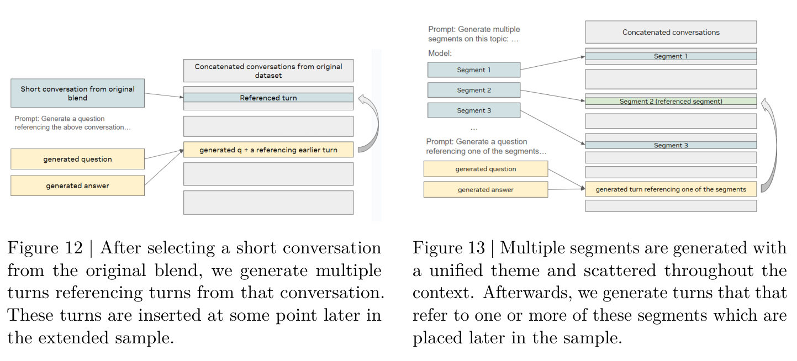
（接上页列表第 1 项）拼接样本较早位置的短对话；随后生成后续用户问题，按主题显式引用该轮次序列（例如“在我们讨论现代作家的那部分对话中……”）。引用问题和答案均由 DeepSeek-R1（DeepSeek-AI, 2025a）生成。这些引用对被插入数据混合的推理和非推理子集中的各个对话位置（见图 12）。由于我们只需要被引用的对话作为上下文，该方法无需依赖生成器模型的长上下文理解。
我们发现，在这些 512k token 扩展混合数据上，仅训练几百步，混合模型就能学会在更长上下文长度上工作。我们在非推理模式下使用 RULER（Hsieh et al., 2024）基准评估这一能力，模型在此阶段之后于 128k 序列长度下取得 83% 的 RULER 得分。
SFT 后，我们分多个阶段应用 Group Relative Policy Optimization（GRPO）（Shao et al., 2024）。每阶段通过创建带自动验证器的任务特定数据集，针对指令遵循或工具使用等特定技能，随后使用通用 RM 进行更广泛的微调。
指令遵循调优。为强化指令遵循，我们从 LMSYS Chat 数据集采样 16,000 个提示词，配上 IFEval 风格指令。基于规则的验证器根据输出满足各条指令的程度评分，产生优先强调精确遵循指令的奖励信号。我们使用 TRT-LLM 后端进行策略采样。IFEval RL 实验显著增强 IFEval 能力，而其他基准略有波动，需要谨慎选择 checkpoint。我们使用 \(1e-6\) 学习率，它在不使其他模型能力退步的情况下，持续改善指令遵循能力。
通过 RM 提高通用帮助性。在最终 RL 阶段，我们引入基于 Qwen-32B 的 RM（RewardBench 得分 92.8），以提高回答的整体帮助性。我们使用 GRPO 和 HelpSteer2（Wang et al., 2024b）的提示词训练。最终阶段使输出质量明显提升。
推理时行为可通过系统提示词中的简单控制标签定制：
{‘reasoning’: True} 触发推理模式。{‘reasoning’: False} 触发直接回答模式。我们的 Jinja 聊天模板检测这些控制字符串，并据此修改 assistant 的回答。存在 {‘reasoning’: True} 时，回答加上前缀 Assistant:<think>\n，表示推理轨迹开始。检测到 {‘reasoning’: False} 时，回答加上前缀 Assistant:<think></think>，表示非推理回答。该机制实现了接近 100% 的推理或非推理模式控制。
在数学、代码、科学、工具使用和对话基准上，Nemotron-H-47B-Reasoning-128K 的准确率与 Llama-Nemotron Super 49B V1.0 相当或更高，并在所有非代码基准上超过 Qwen3 32B。模型支持对所有线性层进行 PTQ，以极小准确率损失实现高效部署。我们还提供量化 checkpoint 及对应结果，以展示实际场景中的有效性。
Checkpoint 合并。我们观察到，较小的 8B 模型在内部安全基准上表现吃力。为此，我们选择 checkpoint 插值（Wortsman et al., 2022），混入一个更早的 RL checkpoint，它由更安全的长上下文扩展 checkpoint 对齐而来。Checkpoint 插值通过线性插值模型权重实现：\((1 - \alpha ) * w_{model1} + \alpha * w_{model2}\)。我们对 \(\alpha\) 从 0.1 到 0.9、步长为 0.1 的取值进行参数扫描，发现约 0.5 的值能在推理能力与安全行为之间提供良好权衡。
在 AIME25、科学、工具使用和指令遵循基准上，Nemotron-H-8B-Reasoning-128K 的准确率与 Llama-Nemotron Nano 8B V1.0 相当或更高。模型支持对所有线性层进行 PTQ，从而以（接下页）
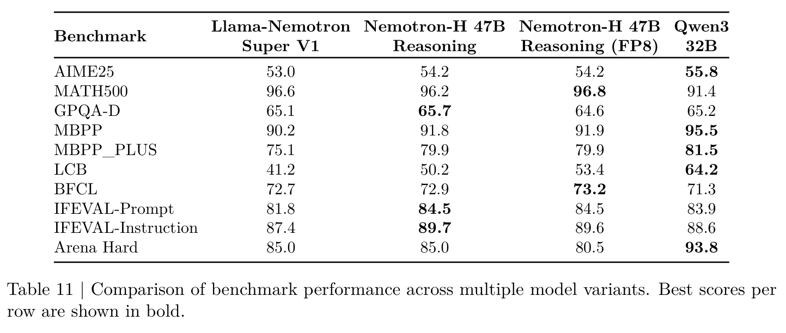
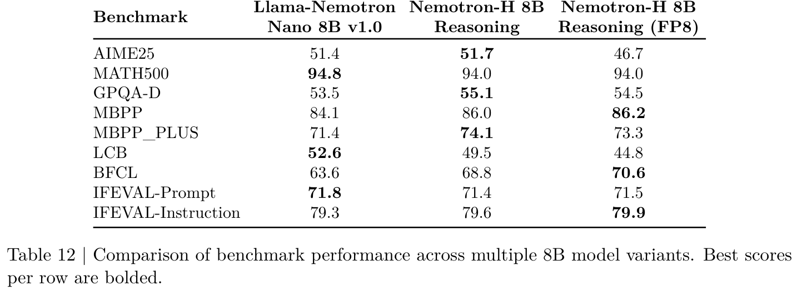
（接上页）极小的准确率损失实现高效部署。我们还提供 FP8 量化 checkpoint 和对应结果，以展示实际场景中的有效性。
Nemotron-H 模型家族表明，混合模型架构能够兼得两者优势：能力与先进 Transformer 模型相当，同时提高推理速度。我们发现，相较其他规模相近的先进开源 Transformer 模型（例如 Qwen-2.5-7B/72B 和 Llama-3.1-8B/70B），Nemotron-H 基础模型的准确率更好或相当，推理速度最高快 \(3\times\)。我们还发现，这些基础模型可以改造为有效的 VLM 和指令微调模型。此外，我们基于 FP8 的训练方案和 MiniPuzzle 均可用于降低创建这些模型的成本。
我们已发布本文介绍的 Nemotron-H 基础 checkpoint，并提供 Hugging Face 和 NeMo 支持，以促进进一步研究：
文中介绍的 Nemotron-H Reasoning checkpoint 也在 Hugging Face 提供：
感谢以下人员为 Nemotron-H 作出的宝贵贡献。
数据。Abhinav Khattar, Aleksander Ficek, Amala Sanjay Deshmukh, Andrew Tao, Ayush Dattagupta, Brandon Norick*, Chengyu Dong*, Dan Su*, Daria Gitman, Evelina Bakhturina, Igor Gitman, Ilia Karmanov, Ivan Moshkov, Jane Polak Scowcroft, Jarno Seppanen, Jiaxuan You, Jocelyn Huang, John Kamalu*, Joseph Jennings*, Jupinder Parmar*, Karan Sapra, Kateryna Chumachenko, Kezhi Kong*, Lukas Voegtle, Lindsey Pavao, Markus Kliegl*, Matvei Novikov, Mehrzad Samadi, Miguel Martinez, Mostofa Patwary*, Osvald Nitski, Philipp Fischer, Pritam Gundecha, Rabeeh Karimi Mahabadi, Sean Narenthiran, Sanjeev Satheesh*, Seungju Han, Shrimai Prabhumoye*, Shubham Pachori, Shubham Toshniwal, Siddhartha Jain, Somshubra Majumdar, Syeda Nahida Akter*, Timo Roman, Ushnish De, Vahid Noroozi, Vitaly Kurin, Wasi Uddin Ahmad, Wei Du, Yao Xu, Yejin Choi, Ying Lin*.
FP8 方案。Carlo del Mundo, Dusan Stosic, Eric Chung, Jinze Xue, John Kamalu, Kirthi Sivamani, Mike Chrzanowski*, Mohammad Shoeybi, Mostofa Patwary, Oleg Rybakov*, Paulius Micikevicius, Peter Dykas*, Przemek Tredak, Zhongbo Zhu.
模型架构。Brandon Norick*, Duncan Riach*, Roger Waleffe*, Wonmin Byeon*.
预训练。Deepak Narayanan*, Hongbin Liu, Kunlun Li, Maciej Bala, Michael Andersch, Mikolaj Blaz, Oleg Rybakov, Peter Dykas, Roger Waleffe*, Sangkug Lym, Selvaraj Anandaraj, Seonmyeong Bak, Slawek Kierat, Szymon Migacz, Xiaowei Ren.
基础设施。Aaron Blakeman, Aarti Basant, Ashwin Poojary, Brian Butterfield, Christine Harvey, Ding Ma, Dong Ahn, Gargi Prasad, Hui Li, Jason Sewall, Jing Zhang, Jining Huang, Kumar Anik, Maer Rodrigues de Melo, Mohamed Fawzy, Ning Xu, Pasha Shamis, Pierre-Yves Aquilanti, Rahul Kandu, Ruoxi Zhang, Sabrina Kavanaugh, Sergey Kashirsky, Shelby Thomas, Sirshak Das, Sriharsha Niverty, Stefania Alborghetti, Tal Shiri.
蒸馏。Akhiad Bercovich*, Ali Taghibakhshi*, Daniel Korzekwa, Elad Segal*, Izik Golan*, Marcin Chochowski*, Mostofa Patwary, Pavlo Molchanov*, Ran El-Yaniv, Raviraj Joshi, Roger Waleffe, Saurav Muralidharan*, Sharath Turuvekere Sreenivas*, Tomer Ronen*.
VLM。Andrew Tao, Boxin Wang*, Danny Yin, Fuxiao Liu, Guilin Liu, Guo Chen, Jason Lu, Jon Barker, Lukas Voegtle, Matthieu Le, Mike Ranzinger, Nayeon Lee*, Philipp Fischer, Song Han, Tuomas Rintamaki, Tyler Poon, Wei Ping*, Wenliang Dai*, Zhiding Yu, Zhiqi Li, Zhuolin Yang*.
对齐与长上下文。Adithya Renduchintala*, Ali Taghibakhshi, Ameya Sunil Mahabaleshwarkar*, Bilal Kartal*, David Mosallanezhad, Dima Rekesh*, Ellie Evans, Fei Jia*, Felipe Sores*, Gerald Shen*, Haifeng Qian*, Hoo Chang Shin, Jiaqi Zeng, Julien Veron Vialard*, Luis Vega*, Makesh Narsimhan Sreedhar, Michael Evans, Olivier Delalleau, Prasoon Varshney, Samuel Kriman*, Shantanu Acharya*, Soumye Singhal, Tugrul Konuk, Yian Zhang*, Yoshi Suhara, Zijia Chen.
推理。Helen Ngo*, Keshav Santhanam*, Vijay Korthikanti*.
软件支持。Adithya Renduchintala, Ali Taghibakhshi, Anna Shors, Ashwath Aithal,
（软件支持名单接下页。）
（接上页软件支持贡献者名单。）
Balaram Buddharaju, Bobby Chen, Cyril Meurillon, David Mosallanezhad, Deepak Narayanan, Dmytro Pykhtar, Duncan Riach, Ellie Evans, Fei Jia, Felipe Sores, Gerald Shen, Helen Ngo, Jared Casper, Jimmy Zhang, Keshav Santhanam, Lawrence McAfee, Luis Vega, Michael Evans, Nima Tajbakhsh, Olivier Delalleau, Parth Chadha, Piotr Bialecki, Roger Waleffe, Sahil Jain, Terry Kong, Tyler Poon, Vijay Korthikanti, Yian Zhang, Yoshi Suhara, Zhiyu Li.
评估与安全。Ameya Sunil Mahabaleshwarkar*, Christopher Parisien, David Mosallanezhad*, Denys Fridman, Eileen Long, Erick Galinkin, Ewa Dobrowolska, Katherine Luna, Leon Derczynski, Marta Stepniewska-Dziubinska, Michael Evans, Roger Waleffe*, Sanjeev Satheesh*, Shaona Ghosh, Shrimai Prabhumoye, Suseella Panguluri, Syeda Nahida Akter, Varun Singh.
项目管理。Joey Conway, Krzysztof Pawelec, Shyamala Prayaga, Swetha Bhendigeri, Trisha Saar.
领导团队。Alexis Bjorlin, Andrew Tao*, Boris Ginsburg*, Bryan Catanzaro*, Eric Chung, Jan Kautz, Jonathan Cohen*, Kari Briski, Misha Smelyanskiy, Mohammad Shoeybi*, Mostofa Patwary*, Oleksii Kuchaiev*, Sharon Clay, Song Han, Timo Roman, Wei Ping*.
* 核心贡献者。
Joshua Ainslie, James Lee-Thorp, Michiel de Jong, Yury Zemlyanskiy, Federico Lebrón, and Sumit Sanghai. GQA：从多头 checkpoint 训练广义多查询 Transformer 模型, 2023. URL https://arxiv.org/abs/2305.13245.
Syeda Nahida Akter, Shrimai Prabhumoye, John Kamalu, Sanjeev Satheesh, Eric Nyberg, Mostofa Patwary, Mohammad Shoeybi, and Bryan Catanzaro. MIND：用于 LLM 预训练的融入数学知识的合成对话, 2024. URL https://arxiv.org/abs/2410.12881.
Jean-Baptiste Alayrac, Jeff Donahue, Pauline Luc, Antoine Miech, Iain Barr, Yana Hasson, Karel Lenc, Arthur Mensch, Katherine Millican, Malcolm Reynolds, 等 Flamingo：用于少样本学习的 VLM. Advances in Neural Information Processing Systems, 35:23716–23736, 2022.
Loubna Ben Allal, Anton Lozhkov, Elie Bakouch, Gabriel Martín Blázquez, Guilherme Penedo, Lewis Tunstall, Andrés Marafioti, Hynek Kydlíček, Agustín Piqueres Lajarín, Vaibhav Srivastav, Joshua Lochner, Caleb Fahlgren, Xuan-Son Nguyen, Clémentine Fourrier, Ben Burtenshaw, Hugo Larcher, Haojun Zhao, Cyril Zakka, Mathieu Morlon, Colin Raffel, Leandro von Werra, and Thomas Wolf. SmolLM2：小模型做大事——以数据为中心的小语言模型训练, 2025. URL https://arxiv.org/abs/2502.02737.
Zeyuan Allen-Zhu and Yuanzhi Li. 语言模型的物理学：第 3.2 部分，知识操作, 2024. URL https://arxiv.org/abs/2309.14402.
Jacob Austin, Augustus Odena, Maxwell Nye, Maarten Bosma, Henryk Michalewski, David Dohan, Ellen Jiang, Carrie Cai, Michael Terry, Quoc Le, and Charles Sutton. 使用 LLM 进行程序合成, 2021. URL https://arxiv.org/abs/2108.07732.
Iz Beltagy, Matthew E. Peters, and Arman Cohan. Longformer：面向长文档的 Transformer, 2020. URL https://arxiv.org/abs/2004.05150.
Akhiad Bercovich, Tomer Ronen, Talor Abramovich, Nir Ailon, Nave Assaf, Mohammad Dabbah, Ido Galil, Amnon Geifman, Yonatan Geifman, Izhak Golan, Netanel Haber, Ehud Karpas, Roi Koren, Itay Levy, Pavlo Molchanov, Shahar Mor, Zach Moshe, Najeeb Nabwani, Omri Puny, Ran Rubin, Itamar Schen, Ido Shahaf, Oren Tropp, Omer Ullman Argov, Ran Zilberstein, and Ran El-Yaniv. Puzzle：面向推理优化 LLM 的基于蒸馏的 NAS, 2024. URL https://arxiv.org/abs/2411.19146.
Yonatan Bisk, Rowan Zellers, Ronan Le Bras, Jianfeng Gao, and Yejin Choi. PIQA：用自然语言进行物理常识推理, 2019. URL https://arxiv.org/abs/1911.11641.
Tom B. Brown, Benjamin Mann, Nick Ryder, Melanie Subbiah, Jared Kaplan, Prafulla Dhariwal, Arvind Neelakantan, Pranav Shyam, Girish Sastry, Amanda Askell, Sandhini Agarwal, Ariel Herbert-Voss, Gretchen Krueger, Tom Henighan, Rewon Child, Aditya Ramesh, Daniel M. Ziegler, Jeffrey Wu, Clemens Winter, Christopher Hesse, Mark Chen, Eric Sigler, Mateusz Litwin, Scott Gray, Benjamin Chess, Jack Clark, Christopher Berner, Sam McCandlish, Alec Radford, Ilya Sutskever, and Dario Amodei. 语言模型是少样本学习器, 2020. URL https://arxiv.org/abs/2005.14165.
Mark Chen, Jerry Tworek, Heewoo Jun, Qiming Yuan, Henrique Ponde de Oliveira Pinto, Jared Kaplan, 等 评估使用代码训练的 LLM, 2021. URL https://arxiv.org/abs/2107.03374.
参考文献（续）
Zhe Chen, Weiyun Wang, Yue Cao, Yangzhou Liu, Zhangwei Gao, Erfei Cui, Jinguo Zhu, Shenglong Ye, Hao Tian, Zhaoyang Liu, 等 通过模型、数据和 test-time scaling，拓展开源多模态模型的性能边界. arXiv 预印本 arXiv:2412.05271, 2024.
Peter Clark, Isaac Cowhey, Oren Etzioni, Tushar Khot, Ashish Sabharwal, Carissa Schoenick, and Oyvind Tafjord. 认为你已解决问答问题？试试 ARC，即 AI2 推理挑战. ArXiv, abs/1803.05457, 2018.
Karl Cobbe, Vineet Kosaraju, Mohammad Bavarian, Mark Chen, Heewoo Jun, Lukasz Kaiser, Matthias Plappert, Jerry Tworek, Jacob Hilton, Reiichiro Nakano, Christopher Hesse, and John Schulman. 训练验证器以求解数学应用题, 2021. URL https://arxiv.org/abs/2110.14168.
Wenliang Dai, Nayeon Lee, Boxin Wang, Zhuolin Yang, Zihan Liu, Jon Barker, Tuomas Rintamaki, Mohammad Shoeybi, Bryan Catanzaro, and Wei Ping. NVLM：开放的前沿级多模态 LLM. arXiv 预印本 arXiv:2409.11402, 2024.
Tri Dao and Albert Gu. Transformer 是 SSM：通过结构化状态空间对偶构建广义模型与高效算法, 2024. URL https://arxiv.org/abs/2405.21060.
Gemma Team @ Google DeepMind. Gemma 3 技术报告, 2025. URL https://arxiv.org/abs/2503.19786.
DeepSeek-AI. DeepSeek-R1：通过强化学习激发 LLM 的推理能力. arXiv 预印本 arXiv:2501.12948, 2025a.
DeepSeek-AI. DeepSeek-R1：通过强化学习激发 LLM 的推理能力, 2025b. URL https://arxiv.org/abs/2501.12948.
DeepSeek-AI. DeepSeek-V3 技术报告, 2025c. URL https://arxiv.org/abs/2412.19437.
Haodong Duan, Junming Yang, Yuxuan Qiao, Xinyu Fang, Lin Chen, Yuan Liu, Xiaoyi Dong, Yuhang Zang, Pan Zhang, Jiaqi Wang, 等 VLMEvalKit：用于评估大型多模态模型的开源工具包. In Proceedings of the 32nd ACM International Conference on Multimedia, 页 11198–11201, 2024.
Steven Feng, Shrimai Prabhumoye, Kezhi Kong, Dan Su, Mostofa Patwary, Mohammad Shoeybi, and Bryan Catanzaro. 最大化数据潜力：通过两阶段预训练提高 LLM 准确率, 2024. URL https://arxiv.org/abs/2412.15285.
Shaona Ghosh, Prasoon Varshney, Makesh Narsimhan Sreedhar, Aishwarya Padmakumar, Traian Rebedea, Jibin Rajan Varghese, and Christopher Parisien. AEGIS2.0：用于 LLM 安全护栏对齐的多样化 AI 安全数据集与风险分类体系. arXiv 预印本 arXiv:2501.09004, 2025.
Yash Goyal, Tejas Khot, Douglas Summers-Stay, Dhruv Batra, and Devi Parikh. 让 VQA 中的 V 发挥作用：提升图像理解在视觉问答中的地位. In Proceedings of the IEEE Conference on Computer Vision and Pattern Recognition, 页 6904–6913, 2017.
Albert Gu and Tri Dao. Mamba：通过选择性状态空间进行线性时间序列建模, 2024. URL https://arxiv.org/abs/2312.00752.
参考文献（续）
Dan Hendrycks, Collin Burns, Steven Basart, Andy Zou, Mantas Mazeika, Dawn Song, and Jacob Steinhardt. 衡量大规模多任务语言理解, 2021a. URL https://arxiv.org/abs/2009.03300.
Dan Hendrycks, Collin Burns, Saurav Kadavath, Akul Arora, Steven Basart, Eric Tang, Dawn Song, and Jacob Steinhardt. 使用 MATH 数据集衡量数学问题求解能力, 2021b. URL https://arxiv.org/abs/2103.03874.
Geoffrey Hinton, Oriol Vinyals, and Jeff Dean. 蒸馏神经网络中的知识, 2015.
Cheng-Ping Hsieh, Simeng Sun, Samuel Kriman, Shantanu Acharya, Dima Rekesh, Fei Jia, Yang Zhang, and Boris Ginsburg. RULER：长上下文语言模型的真实上下文长度是多少？, 2024. URL https://arxiv.org/abs/2404.06654.
Drew A Hudson and Christopher D Manning. GQA：用于真实世界视觉推理和组合问答的新数据集. In Proceedings of the IEEE/CVF conference on computer vision and pattern recognition, 页 6700–6709, 2019.
Kushal Kafle, Brian Price, Scott Cohen, and Christopher Kanan. DVQA：通过问答理解数据可视化. In Proceedings of the IEEE Conference on Computer Vision and Pattern Recognition, 页 5648–5656, 2018.
Ilia Karmanov, Amala Sanjay Deshmukh, Lukas Voegtle, Philipp Fischer, Kateryna Chumachenko, Timo Roman, Jarno Seppänen, Jupinder Parmar, Joseph Jennings, Andrew Tao, and Karan Sapra. Éclair：结合文档阅读顺序提取内容与布局, 2025. URL https://arxiv.org/abs/2502.04223.
Angelos Katharopoulos, Apoorv Vyas, Nikolaos Pappas, and François Fleuret. Transformer 是 RNN：采用线性 attention 的快速自回归 Transformer, 2020. URL https://arxiv.org/abs/2006.16236.
Aniruddha Kembhavi, Mike Salvato, Eric Kolve, Minjoon Seo, Hannaneh Hajishirzi, and Ali Farhadi. 一幅示意图胜过十二张图像. In ECCV, 2016.
Vijay Korthikanti, Jared Casper, Sangkug Lym, Lawrence McAfee, Michael Andersch, Mohammad Shoeybi, and Bryan Catanzaro. 减少大型 Transformer 模型中的激活重计算, 2022. URL https://arxiv.org/abs/2205.05198.
Ranjay Krishna, Yuke Zhu, Oliver Groth, Justin Johnson, Kenji Hata, Joshua Kravitz, Stephanie Chen, Yannis Kalantidis, Li-Jia Li, David A Shamma, 等 Visual Genome：通过众包密集图像标注连接语言与视觉. International Journal of Computer Vision, 123:32–73, 2017.
Woosuk Kwon, Zhuohan Li, Siyuan Zhuang, Ying Sheng, Lianmin Zheng, Cody Hao Yu, Joseph E. Gonzalez, Hao Zhang, and Ion Stoica. 通过 PagedAttention 高效管理 LLM 服务的内存, 2023. URL https://arxiv.org/abs/2309.06180.
Jeffrey Li, Alex Fang, Georgios Smyrnis, Maor Ivgi, Matt Jordan, Samir Yitzhak Gadre, Hritik Bansal, Etash Guha, Sedrick Scott Keh, Kushal Arora, 等 DataComp-LM：寻找下一代语言模型训练集. Advances in Neural Information Processing Systems, 37:14200–14282, 2024.
Junnan Li, Dongxu Li, Caiming Xiong, and Steven Hoi. BLIP：自举语言图像预训练，实现统一视觉语言理解与生成. In International Conference on Machine Learning, 页 12888–12900. PMLR, 2022.
参考文献（续）
Zhiqi Li, Guo Chen, Shilong Liu, Shihao Wang, Vibashan VS, Yishen Ji, Shiyi Lan, Hao Zhang, Yilin Zhao, Subhashree Radhakrishnan, 等 Eagle 2：从零构建前沿 VLM 的后训练数据策略. arXiv 预印本 arXiv:2501.14818, 2025.
Opher Lieber, Barak Lenz, Hofit Bata, Gal Cohen, Jhonathan Osin, Itay Dalmedigos, Erez Safahi, Shaked Meirom, Yonatan Belinkov, Shai Shalev-Shwartz, Omri Abend, Raz Alon, Tomer Asida, Amir Bergman, Roman Glozman, Michael Gokhman, Avashalom Manevich, Nir Ratner, Noam Rozen, Erez Shwartz, Mor Zusman, and Yoav Shoham. Jamba：Transformer-Mamba 混合语言模型, 2024. URL https://arxiv.org/abs/2403.19887.
Tsung-Yi Lin, Michael Maire, Serge Belongie, Lubomir Bourdev, Ross Girshick, James Hays, Pietro Perona, Deva Ramanan, C. Lawrence Zitnick, and Piotr Dollár. Microsoft COCO：上下文中的常见物体, 2015. URL https://arxiv.org/abs/1405.0312.
Adam Dahlgren Lindström and Savitha Sam Abraham. CLEVR-Math：用于组合语言、视觉与数学推理的数据集. arXiv 预印本 arXiv:2208.05358, 2022.
Haotian Liu, Chunyuan Li, Qingyang Wu, and Yong Jae Lee. 视觉指令微调. Advances in Neural Information Processing Systems, 36:34892–34916, 2023a.
Jiawei Liu, Chunqiu Steven Xia, Yuyao Wang, and Lingming Zhang. ChatGPT 生成的代码真的正确吗？严格评估 LLM 的代码生成能力. arXiv 预印本 arXiv:2305.01210, 2023b. doi: https://doi.org/10.48550/arXiv.2305.01210. URL https://arxiv.org/abs/2305.01210.
Yuliang Liu, Zhang Li, Mingxin Huang, Biao Yang, Wenwen Yu, Chunyuan Li, Xucheng Yin, Cheng lin Liu, Lianwen Jin, and Xiang Bai. OCRBench：大型多模态模型中 OCR 的隐藏奥秘, 2024. URL https://arxiv.org/abs/2305.07895.
Pan Lu, Swaroop Mishra, Tanglin Xia, Liang Qiu, Kai-Wei Chang, Song-Chun Zhu, Oyvind Tafjord, Peter Clark, and Ashwin Kalyan. 学习解释：通过 CoT 进行科学问答的多模态推理. Advances in Neural Information Processing Systems, 35:2507–2521, 2022.
Pan Lu, Hritik Bansal, Tony Xia, Jiacheng Liu, Chunyuan Li, Hannaneh Hajishirzi, Hao Cheng, Kai-Wei Chang, Michel Galley, and Jianfeng Gao. MathVista：评估基础模型在视觉上下文中的数学推理. In International Conference on Learning Representations (ICLR), 2024.
Pratyush Maini, Skyler Seto, He Bai, David Grangier, Yizhe Zhang, and Navdeep Jaitly. 改述网页：计算与数据高效的语言建模方案. In ICLR 2024 Workshop on Navigating and Addressing Data Problems for Foundation Models, 2024.
Somshubra Majumdar, Vahid Noroozi, Sean Narenthiran, Aleksander Ficek, Jagadeesh Balam, and Boris Ginsburg. Genetic Instruct：扩大面向 LLM 的编程指令合成生成规模. 2024. URL https://arxiv.org/abs/2407.21077.
Andres Marafioti and Hugo Laurencon. Docmatix：大规模文档视觉问答数据集, 2024.
Kenneth Marino, Mohammad Rastegari, Ali Farhadi, and Roozbeh Mottaghi. OK-VQA：需要外部知识的视觉问答基准. In Proceedings of the IEEE/cvf conference on computer vision and pattern recognition, 页 3195–3204, 2019.
参考文献（续）
Ahmed Masry, Do Xuan Long, Jia Qing Tan, Shafiq Joty, and Enamul Hoque. ChartQA：结合视觉与逻辑推理的图表问答基准. arXiv 预印本 arXiv:2203.10244, 2022.
Minesh Mathew, Dimosthenis Karatzas, and CV Jawahar. DocVQA：用于文档图像视觉问答的数据集. In Proceedings of the IEEE/CVF Winter Conference on Applications of Computer Vision, 页 2200–2209, 2021.
Llama Team @ Meta. Llama 3 模型家族, 2024. URL https://arxiv.org/abs/2407.21783.
Paulius Micikevicius, Dusan Stosic, Neil Burgess, Marius Cornea, Pradeep Dubey, Richard Grisenthwaite, Sangwon Ha, Alexander Heinecke, Patrick Judd, John Kamalu, Naveen Mellempudi, Stuart Oberman, Mohammad Shoeybi, Michael Siu, and Hao Wu. 用于深度学习的 FP8 格式, 2022. URL https://arxiv.org/abs/2209.05433.
Todor Mihaylov, Peter Clark, Tushar Khot, and Ashish Sabharwal. 一套盔甲能导电吗？用于开放书本问答的新数据集, 2018. URL https://arxiv.org/abs/1809.02789.
Anand Mishra, Shashank Shekhar, Ajeet Kumar Singh, and Anirban Chakraborty. OCR-VQA：通过阅读图像中的文本进行视觉问答. In 2019 International Conference on Document Analysis and Recognition (ICDAR), 页 947–952. IEEE, 2019.
Niklas Muennighoff, Alexander Rush, Boaz Barak, Teven Le Scao, Nouamane Tazi, Aleksandra Piktus, Sampo Pyysalo, Thomas Wolf, and Colin A Raffel. 扩展数据受限的语言模型. Advances in Neural Information Processing Systems, 36, 2024.
Saurav Muralidharan, Sharath Turuvekere Sreenivas, Raviraj Joshi, Marcin Chochowski, Mostofa Patwary, Mohammad Shoeybi, Bryan Catanzaro, Jan Kautz, and Pavlo Molchanov. 通过剪枝和知识蒸馏构建紧凑语言模型, 2024. URL https://arxiv.org/abs/2407.14679.
NVIDIA. Nemotron-4 340B 技术报告, 2024. URL https://arxiv.org/abs/2406.11704.
NVIDIA, Alisson Azzolini, Hannah Brandon, Prithvijit Chattopadhyay, Huayu Chen, Jinju Chu, Yin Cui, Jenna Diamond, Yifan Ding, Francesco Ferroni, Rama Govindaraju, Jinwei Gu, Siddharth Gururani, Imad El Hanafi, Zekun Hao, Jacob Huffman, Jingyi Jin, Brendan Johnson, Rizwan Khan, George Kurian, Elena Lantz, Nayeon Lee, Zhaoshuo Li, Xuan Li, Tsung-Yi Lin, YenChen Lin, Ming-Yu Liu, Andrew Mathau, Yun Ni, Lindsey Pavao, Wei Ping, David W. Romero, Misha Smelyanskiy, Shuran Song, Lyne Tchapmi, Andrew Z. Wang, Boxin Wang, Haoxiang Wang, Fangyin Wei, Jiashu Xu, Yao Xu, Xiaodong Yang, Zhuolin Yang, Xiaohui Zeng, and Zhe Zhang. Cosmos-Reason1：从物理常识到具身推理, 2025. URL https://arxiv.org/abs/2503.15558.
OpenAI. 使用 LLM 学习推理, 2025. URL https://openai.com/index/learning-to-reason-with-llms/.
Vicente Ordonez, Girish Kulkarni, and Tamara Berg. Im2text：使用 100 万张带描述的照片描述图像. Advances in Neural Information Processing Systems, 24, 2011.
Jupinder Parmar, Shrimai Prabhumoye, Joseph Jennings, Mostofa Patwary, Sandeep Subramanian, Dan Su, Chen Zhu, Deepak Narayanan, Aastha Jhunjhunwala, Ayush Dattagupta, Vibhu Jawa, Jiwei Liu, Ameya Mahabaleshwarkar, Osvald Nitski, Annika Brundyn, James Maki, Miguel
（最后一条参考文献接下页。）
参考文献（续）
Martinez, Jiaxuan You, John Kamalu, Patrick LeGresley, Denys Fridman, Jared Casper, Ashwath Aithal, Oleksii Kuchaiev, Mohammad Shoeybi, Jonathan Cohen, and Bryan Catanzaro. Nemotron-4 15B 技术报告. arXiv 预印本 arXiv:2402.16819, 2024. URL https://arxiv.org/abs/2402.16819.
Keiran Paster, Marco Dos Santos, Zhangir Azerbayev, and Jimmy Ba. OpenWebMath：高质量数学网页文本的开放数据集, 2023.
Guilherme Penedo, Hynek Kydlíček, Anton Lozhkov, Margaret Mitchell, Colin A Raffel, Leandro Von Werra, Thomas Wolf, 等 FineWeb 数据集：大规模从网页中提炼最优质文本数据. Advances in Neural Information Processing Systems, 37:30811–30849, 2024.
Qwen. Qwen2.5 技术报告, 2025. URL https://arxiv.org/abs/2412.15115.
Samyam Rajbhandari, Jeff Rasley, Olatunji Ruwase, and Yuxiong He. ZeRO：面向万亿参数模型训练的内存优化, 2020. URL https://arxiv.org/abs/1910.02054.
Keisuke Sakaguchi, Ronan Le Bras, Chandra Bhagavatula, and Yejin Choi. WinoGrande：大规模对抗性 Winograd Schema 挑战, 2019. URL https://arxiv.org/abs/1907.10641.
Zhihong Shao, Peiyi Wang, Qihao Zhu, Runxin Xu, Junxiao Song, Xiao Bi, Haowei Zhang, Mingchuan Zhang, YK Li, Y Wu, 等 DeepSeekMath：推进开放语言模型的数学推理极限. arXiv 预印本 arXiv:2402.03300, 2024.
Piyush Sharma, Nan Ding, Sebastian Goodman, and Radu Soricut. Conceptual Captions：用于自动图像描述的经过清理、上位概念替换的图像替代文本数据集. In Proceedings of the 56th Annual Meeting of the Association for Computational Linguistics (Volume 1: Long Papers), 页 2556–2565, 2018.
Mohammad Shoeybi, Mostofa Patwary, Raul Puri, Patrick LeGresley, Jared Casper, and Bryan Catanzaro. Megatron-LM：使用模型并行训练数十亿参数语言模型, 2020. URL https://arxiv.org/abs/1909.08053.
Amanpreet Singh, Vivek Natarajan, Meet Shah, Yu Jiang, Xinlei Chen, Dhruv Batra, Devi Parikh, and Marcus Rohrbach. 迈向能阅读的 VQA 模型. In Proceedings of the IEEE/CVF conference on computer vision and pattern recognition, 页 8317–8326, 2019.
David R. So, Wojciech Mańke, Hanxiao Liu, Zihang Dai, Noam Shazeer, and Quoc V. Le. Primer：为语言建模搜索高效 Transformer, 2022. URL https://arxiv.org/abs/2109.08668.
Sharath Turuvekere Sreenivas, Saurav Muralidharan, Raviraj Joshi, Marcin Chochowski, Ameya Sunil Mahabaleshwarkar, Gerald Shen, Jiaqi Zeng, Zijia Chen, Yoshi Suhara, Shizhe Diao, Chenhan Yu, Wei-Chun Chen, Hayley Ross, Oluwatobi Olabiyi, Ashwath Aithal, Oleksii Kuchaiev, Daniel Korzekwa, Pavlo Molchanov, Mostofa Patwary, Mohammad Shoeybi, Jan Kautz, and Bryan Catanzaro. LLM 剪枝与蒸馏实践：Minitron 方法, 2024. URL https://arxiv.org/abs/2408.11796.
Dan Su, Kezhi Kong, Ying Lin, Joseph Jennings, Brandon Norick, Markus Kliegl, Mostofa Patwary, Mohammad Shoeybi, and Bryan Catanzaro. Nemotron-CC：将 Common Crawl 转化为精炼的长期预训练数据集, 2024. URL https://arxiv.org/abs/2412.02595.
Jianlin Su, Yu Lu, Shengfeng Pan, Ahmed Murtadha, Bo Wen, and Yunfeng Liu. RoFormer：采用 RoPE 的增强 Transformer, 2023. URL https://arxiv.org/abs/2104.09864.
参考文献（续）
Shengyang Sun, Yian Zhang, Alexander Bukharin, David Mosallanezhad, Jiaqi Zeng, Soumye Singhal, Gerald Shen, Adithya Renduchintala, Tugrul Konuk, Yi Dong, Zhilin Wang, Dmitry Chichkov, Olivier Delalleau, and Oleksii Kuchaiev. RPO：模型对齐的统一数学框架, 2025. URL https://arxiv.org/abs/2502.00203.
Shubham Toshniwal, Wei Du, Ivan Moshkov, Branislav Kisacanin, Alexan Ayrapetyan, and Igor Gitman. OpenMathInstruct-2：通过大规模开源指令数据加速数学 AI. arXiv 预印本 arXiv:2410.01560, 2024.
Ashish Vaswani, Noam Shazeer, Niki Parmar, Jakob Uszkoreit, Llion Jones, Aidan N. Gomez, Lukasz Kaiser, and Illia Polosukhin. Attention 就是你所需要的一切, 2023. URL https://arxiv.org/abs/1706.03762.
Andreas Veit, Tomas Matera, Lukas Neumann, Jiri Matas, and Serge Belongie. COCO-Text：用于自然图像中文字检测与识别的数据集和基准. 2016. URL https://arxiv.org/abs/1601.07140.
Roger Waleffe, Wonmin Byeon, Duncan Riach, Brandon Norick, Vijay Korthikanti, Tri Dao, Albert Gu, Ali Hatamizadeh, Sudhakar Singh, Deepak Narayanan, Garvit Kulshreshtha, Vartika Singh, Jared Casper, Jan Kautz, Mohammad Shoeybi, and Bryan Catanzaro. 基于 Mamba 的语言模型的实证研究, 2024. URL https://arxiv.org/abs/2406.07887.
Yubo Wang, Xueguang Ma, Ge Zhang, Yuansheng Ni, Abhranil Chandra, Shiguang Guo, Weiming Ren, Aaran Arulraj, Xuan He, Ziyan Jiang, Tianle Li, Max Ku, Kai Wang, Alex Zhuang, Rongqi Fan, Xiang Yue, and Wenhu Chen. MMLU-Pro：更稳健、更具挑战性的多任务语言理解基准, 2024a. URL https://arxiv.org/abs/2406.01574.
Zhilin Wang, Yi Dong, Olivier Delalleau, Jiaqi Zeng, Gerald Shen, Daniel Egert, Jimmy J. Zhang, Makesh Narsimhan Sreedhar, and Oleksii Kuchaiev. HelpSteer2：用于训练高性能 RM 的开源数据集. arXiv 预印本 arXiv:2406.08673, 2024b. doi: 10.48550/arXiv. 2406.08673.
Mitchell Wortsman, Gabriel Ilharco, Samir Yitzhak Gadre, Rebecca Roelofs, Raphael Gontijo-Lopes, Ari S. Morcos, Hongseok Namkoong, Ali Farhadi, Yair Carmon, Simon Kornblith, and Ludwig Schmidt. 模型汤：平均多个微调模型的权重，在不增加推理时间的情况下提高准确率, 2022. URL https://arxiv.org/abs/2203.05482.
xAI. Grok-1.5 视觉预览：用我们的首个多模态模型连接数字与物理世界, 2024.
Xiang Yue, Yuansheng Ni, Kai Zhang, Tianyu Zheng, Ruoqi Liu, Ge Zhang, Samuel Stevens, Dongfu Jiang, Weiming Ren, Yuxuan Sun, Cong Wei, Botao Yu, Ruibin Yuan, Renliang Sun, Ming Yin, Boyuan Zheng, Zhenzhu Yang, Yibo Liu, Wenhao Huang, Huan Sun, Yu Su, and Wenhu Chen. MMMU：用于专家级 AGI 的大规模多学科多模态理解与推理基准. In Proceedings of CVPR, 2024.
Rowan Zellers, Ari Holtzman, Yonatan Bisk, Ali Farhadi, and Yejin Choi. HellaSwag：机器真的能补完你的句子吗？, 2019. URL https://arxiv.org/abs/1905.07830.
Biao Zhang and Rico Sennrich. 均方根层归一化, 2019. URL https://arxiv.org/abs/1910.07467.
参考文献（续）
Jeffrey Zhou, Tianjian Lu, Swaroop Mishra, Siddhartha Brahma, Sujoy Basu, Yi Luan, Denny Zhou, and Le Hou. LLM 的指令遵循评估. arXiv 预印本 arXiv:2311.07911, 2023.